<!doctype html>
<html lang="en">
<head>
  <meta charset="utf-8">
  <meta name="viewport" content="width=device-width, initial-scale=1">
  <title>arxiv digest — 2026-10-28</title>
  <style>
:root {
  --bg: #ffffff;
  --fg: #1f2328;
  --muted: #59636e;
  --border: #d0d7de;
  --card: #f6f8fa;
  --link: #0969da;
}
body {
  max-width: 980px;
  margin: 0 auto;
  padding: 2rem 1rem 5rem;
  font-family: -apple-system, BlinkMacSystemFont, "Segoe UI", Helvetica, Arial, sans-serif;
  line-height: 1.55;
  color: var(--fg);
  background: var(--bg);
}
a { color: var(--link); }
img { max-width: 100%; height: auto; }
pre, code { background: var(--card); border-radius: 6px; }
pre { padding: 1rem; overflow-x: auto; }
blockquote { border-left: 4px solid var(--border); padding-left: 1rem; color: var(--muted); }
details { margin: 0.6rem 0; }
summary { cursor: pointer; font-weight: 600; }
.paper-figures-scroll {
  display: flex;
  gap: 1rem;
  overflow-x: auto;
  overscroll-behavior-x: contain;
  padding: 0.75rem 0.25rem 1rem;
  margin: 1rem 0 1.25rem;
  border-top: 1px solid var(--border);
  border-bottom: 1px solid var(--border);
  scroll-snap-type: x proximity;
}
.paper-figure-card {
  flex: 0 0 min(260px, 72vw);
  scroll-snap-align: start;
  background: var(--card);
  border: 1px solid var(--border);
  border-radius: 12px;
  padding: 0.55rem;
}
.paper-figure-card img {
  display: block;
  width: 100%;
  max-height: 240px;
  object-fit: contain;
  background: white;
  border-radius: 8px;
}
.paper-figure-caption {
  display: block;
  margin-top: 0.5rem;
  color: var(--muted);
  font-size: 0.85rem;
}
.figure-strip-hint {
  color: var(--muted);
  font-size: 0.9rem;
  margin-bottom: -0.3rem;
}
</style>
  <script>
    window.MathJax = {
      tex: {
        inlineMath: [['$', '$'], ['\\(', '\\)']],
        displayMath: [['$$', '$$'], ['\\[', '\\]']],
        processEscapes: true,
        processEnvironments: true
      },
      options: {
        skipHtmlTags: ['script', 'noscript', 'style', 'textarea', 'pre', 'code'],
        ignoreHtmlClass: 'tex2jax_ignore',
        processHtmlClass: 'tex2jax_process'
      }
    };
  </script>
  <script id="MathJax-script" async
    src="https://cdn.jsdelivr.net/npm/mathjax@3/es5/tex-chtml.js"></script>
</head>
<body>
<header style="background-color: #333; color: white; padding: 15px; margin-bottom: 20px;">
  <h1 style="margin: 0; font-size: 24px;">
    <a href="https://ochelpan.github.io/arXiv_clean/" style="color: white; text-decoration: none;">Main</a>
  </h1>
</header>

<h1>Daily arXiv Report</h1>

<hr>
<p>
<a href="index.html">← Index</a>
 · <a href="papers_04.html">← Previous</a> · <a href="papers_06.html">Next →</a>
</p>
<hr>

<h2>Papers 81–100</h2>
<p><a id="paper-2610.34710"></a></p>
<h3 id="simplified-parisi-ansatz-iii-constructive-cavity-method-and-ultrametricity"><a href="http://arxiv.org/abs/2610.34710v1">Simplified Parisi Ansatz III: Constructive Cavity Method and Ultrametricity</a></h3>
<p><strong>Authors:</strong> Simone Franchini<br>
<strong>Type:</strong> theory · <strong>Category:</strong> disordered systems and neural networks · <strong>PDF:</strong> <a href="https://arxiv.org/pdf/2610.34710v1">https://arxiv.org/pdf/2610.34710v1</a><br>
<strong>Analysis basis:</strong> full PDF text, analyzed in chunks
<strong>Topic relevance:</strong> <code>Keldysh / 2PI / non-Gaussian methods</code> <strong>2/5</strong> · <code>analog quantum simulation</code> <strong>1/5</strong></p>
<div class="figure-strip-hint">↔ Scroll figures horizontally</div>
<div class="paper-figures-scroll">
<figure class="paper-figure-card">
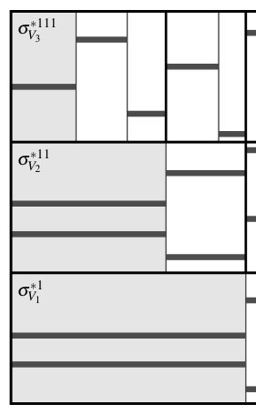
<figcaption class="paper-figure-caption"><b>Fig 1.</b> Figure 1: Schematic representation of the GREM kernel with three layers, in the con- struction with finitely many defects and rectification with respect to the ground state, following the scheme of Figure 5.3 of Ref. [2]. The vertical coordinate runs through the sites of the layers V1,V2,V3; the horizontal coordinate runs through the set S of states, ordered by prefixes. A vertical section of the kernel identifies a complete configuration. The widths of the rectangles represent the Gibbs masses of the corresponding prefixes, including all continuations. The dark gray bands indicate spins flipped with respect to the ground state; outside the bands the spins are aligned with the reference...</figcaption>
</figure>
</div>

<p><strong>Summary.</strong> This theoretical paper provides a detailed physical explanation of the Constructive Cavity Method for the SK spin glass model. It shows that the system's low-temperature physics is governed by a defect-sharing mechanism that enforces ultrametricity. The work rigorously derives the Parisi functional by connecting the system's structure to a Generalized Random Energy Model (GREM) built upon Poisson Point Processes.</p>
<p><strong>Why it may be interesting.</strong> While focused on spin glasses, the rigorous mathematical techniques involving hierarchical decomposition, random fields, and the derivation of complex order parameters (like the Parisi functional) are highly relevant to understanding complex energy landscapes in many-body quantum systems.</p>
<details>
<summary>Detailed structure</summary>
<p><strong>Main problem.</strong> The paper aims to provide a physical explanation for the Constructive Cavity Method (CCM) applied to the Sherrington-Kirkpatrick (SK) model, connecting it to the Random Overlap Structure (ROSt).</p>
<p><strong>Main result.</strong> The mechanism involves defect sharing and fluctuation renewal, which generates the Generalized Random Energy Model (GREM) structure and establishes the ultrametricity of the overlaps, yielding the operational form of the Parisi functional.</p>
<p><strong>Method.</strong> The authors use a hierarchical decomposition (Blanket decomposition) of the Hamiltonian, analyze low-temperature excitations as a dilute gas of defects, and employ Poisson Point Processes (PPPs) to rigorously derive the functional form.</p>
<p><strong>Model / system.</strong> The primary model is the Sherrington-Kirkpatrick (SK) spin glass model with Gaussian random interactions. The analysis is performed in the thermodynamic limit using a constructive, layered partition of the system.</p>
<p><strong>Key observables.</strong> Ultrametricity of overlaps, free energy per spin, and the Parisi functional.</p>
<p><strong>Important parameters / regimes.</strong> Low temperature (low $eta$), finite/exponential populations of defects, and the structure of the cavity variables.</p>
<p><strong>Assumptions / limitations.</strong> The derivation assumes the existence of a global ground state for the interface-only Hamiltonian and relies on controlling the regularity required for counting rare energies.</p>
<p><strong>Paper structure.</strong> The paper develops the CCM by first establishing the interface-only Hamiltonian, then using rectification to define a hierarchical structure, and finally deriving the Parisi functional through a recursive average over independent Poisson Point Processes.</p>
</details>
<details>
<summary>Abstract</summary>
<p>We present a physical explaination of the Constructive Cavity Method (CCM) for the Sherrington--Kirkpatrick model, which identifies the decomposition of the cavity variables into layers with the random overlap structure of Aizenman--Sims--Starr. We describe the low-temperature excitations through a dilute gas of defects relative to the ground state. The sharing of these defects among the descendants and the renewal of the fluctuations along new branches produce the GREM structure and the ultrametricity of the overlaps. This mechanism is developed first with a finite number of defects and then extended to exponential populations of states. At fixed kernel, the Gaussian covariances of the fresh fields connect the complete cavity variables, including their common components, to the same hierarchy that determines the Gibbs masses. We also correct some ambiguities of earlier formulations.</p>
</details>
<p><sub><a href="#top">↑ back to top</a></sub></p>

<p><a id="paper-2610.34338"></a></p>
<h3 id="a-reduction-bound-for-entanglement-detection-by-positive-free-maps"><a href="http://arxiv.org/abs/2610.34338v1">A Reduction Bound for Entanglement Detection by Positive Free Maps</a></h3>
<p><strong>Authors:</strong> Chin-Yen Lee<br>
<strong>Type:</strong> theory · <strong>Category:</strong> quantum information and computing · <strong>PDF:</strong> <a href="https://arxiv.org/pdf/2610.34338v1">https://arxiv.org/pdf/2610.34338v1</a><br>
<strong>Analysis basis:</strong> full PDF text, analyzed in chunks
<strong>Topic relevance:</strong> <code>quantum measurements</code> <strong>2/5</strong></p>
<div class="figure-strip-hint">↔ Scroll figures horizontally</div>
<div class="paper-figures-scroll">
<figure class="paper-figure-card">
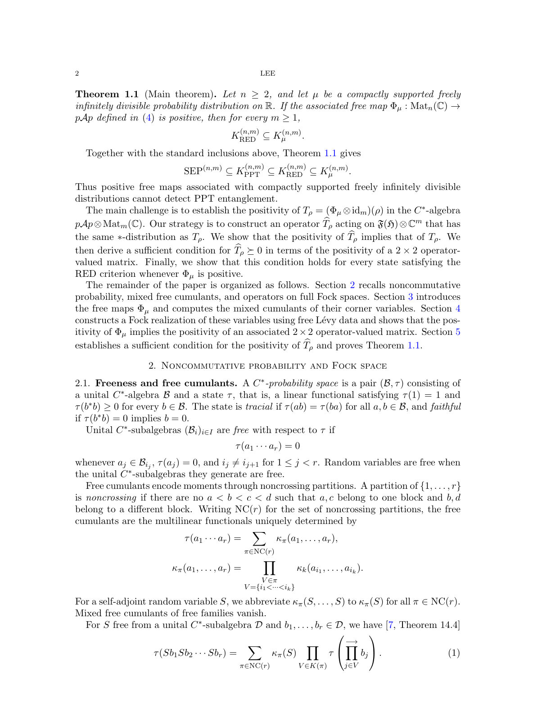
<figcaption class="paper-figure-caption"><b>Fig 1.</b> Low-resolution page preview, page 2</figcaption>
</figure>
<figure class="paper-figure-card">
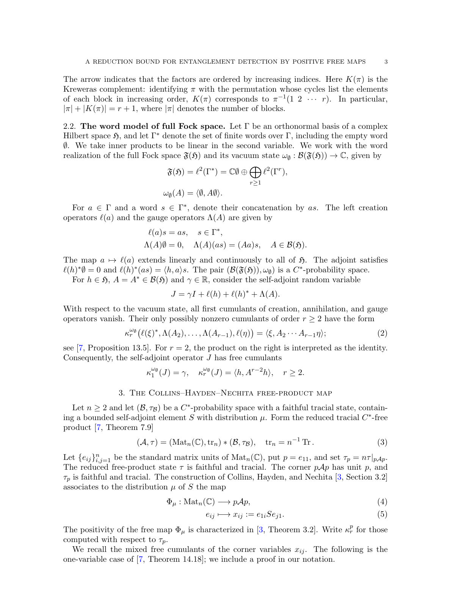
<figcaption class="paper-figure-caption"><b>Fig 2.</b> Low-resolution page preview, page 3</figcaption>
</figure>
<figure class="paper-figure-card">
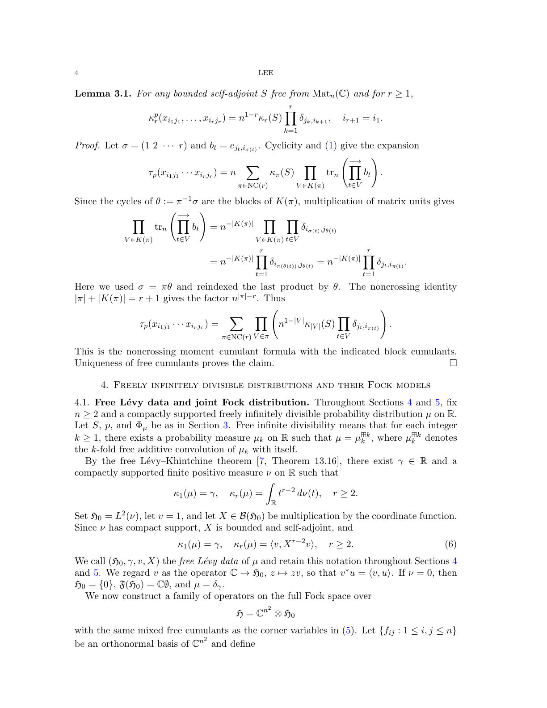
<figcaption class="paper-figure-caption"><b>Fig 3.</b> Low-resolution page preview, page 4</figcaption>
</figure>
<figure class="paper-figure-card">
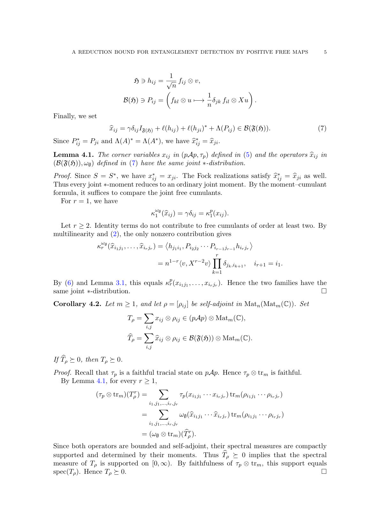
<figcaption class="paper-figure-caption"><b>Fig 4.</b> Low-resolution page preview, page 5</figcaption>
</figure>
<figure class="paper-figure-card">
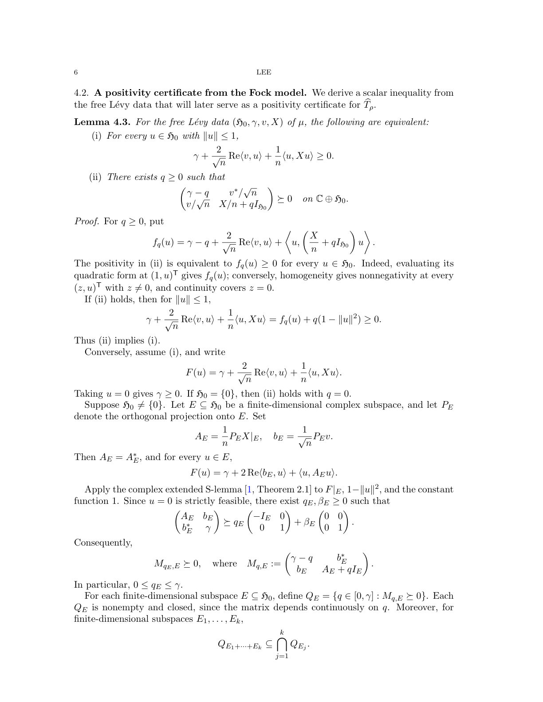
<figcaption class="paper-figure-caption"><b>Fig 5.</b> Low-resolution page preview, page 6</figcaption>
</figure>
</div>

<p><strong>Summary.</strong> This theoretical paper uses advanced tools from free probability theory to analyze entanglement detection. It proves that positive free maps derived from certain distributions cannot detect entanglement that is detectable by the Positive Partial Transpose criterion. This establishes a formal reduction bound, clarifying the limitations of these specific mathematical tools for characterizing quantum entanglement.</p>
<p><strong>Why it may be interesting.</strong> This work provides a rigorous mathematical tool (free probability) to quantify the limitations of entanglement witnesses derived from specific physical constraints (like those imposed by free maps), which is highly relevant for understanding the boundaries of quantum separability.</p>
<details>
<summary>Detailed structure</summary>
<p><strong>Main problem.</strong> The paper aims to establish a reduction bound for entanglement detection using positive free maps ($\Phi_\mu$). Specifically, it proves that certain positive free maps cannot detect entanglement that is detectable by the Positive Partial Transpose (PPT) criterion.</p>
<p><strong>Main result.</strong> Positive free maps associated with compactly supported and freely infinitely divisible distributions are no stronger than the reduction criterion, implying they cannot detect PPT entanglement.</p>
<p><strong>Method.</strong> The proof combines free probability theory, involving joint Fock space realizations and free cumulants, with the analysis of operator positivity certificates derived from free Lévy data.</p>
<p><strong>Model / system.</strong> The analysis concerns bipartite quantum states ($
ho$) and entanglement detection criteria, comparing the set of separable states ($   ext{SEP}$) to the set of states detected by various criteria ($\mathcal{K}(n,m)_\Phi$).</p>
<p><strong>Key observables.</strong> Positivity of operators like $bT
ho$ and $T
ho$, and the comparison of joint $*$-distributions of operators $\{x_{ij}\}$ and $\{b x_{ij}\}$.</p>
<p><strong>Important parameters / regimes.</strong> The dimensions $n \ge 2$ and $m \ge 1$ for the matrix structure, and the requirement that the associated distribution $\mu$ is compactly supported and freely infinitely divisible.</p>
<p><strong>Assumptions / limitations.</strong> The result is contingent on the properties of the free Lévy data associated with $\mu$, and the proof relies on the faithfulness of the tracial state $    au_p \otimes    ext{tr}_m$.</p>
<p><strong>Paper structure.</strong> The paper builds the argument by first establishing relationships between operator families using free cumulants, then deriving positivity conditions on operators acting on the Fock space, culminating in the proof that the reduction criterion is contained within the detection capability of the positive free maps.</p>
</details>
<details>
<summary>Abstract</summary>
<p>Collins, Hayden, and Nechita used free probability to construct families of $k$-positive but not $(k+1)$-positive maps and applied them to entanglement detection. We prove that positive free maps associated with compactly supported freely infinitely divisible distributions are no stronger than the reduction criterion in every ancillary dimension. In particular, these maps cannot detect positive partial transpose entanglement. The proof combines a joint Fock realization with an operator positivity certificate derived from free Lévy data.</p>
</details>
<p><sub><a href="#top">↑ back to top</a></sub></p>

<p><a id="paper-2610.33591"></a></p>
<h3 id="competing-fault-histories-in-lattice-surgery-decoding"><a href="http://arxiv.org/abs/2610.33591v1">Competing Fault Histories in Lattice-Surgery Decoding</a></h3>
<p><strong>Authors:</strong> Niharika Verma<br>
<strong>Type:</strong> theory · <strong>Category:</strong> quantum information and computing · <strong>PDF:</strong> <a href="https://arxiv.org/pdf/2610.33591v1">https://arxiv.org/pdf/2610.33591v1</a><br>
<strong>Analysis basis:</strong> full PDF text, analyzed in chunks
<strong>Topic relevance:</strong> <code>quantum measurements</code> <strong>2/5</strong></p>
<div class="figure-strip-hint">↔ Scroll figures horizontally</div>
<div class="paper-figures-scroll">
<figure class="paper-figure-card">
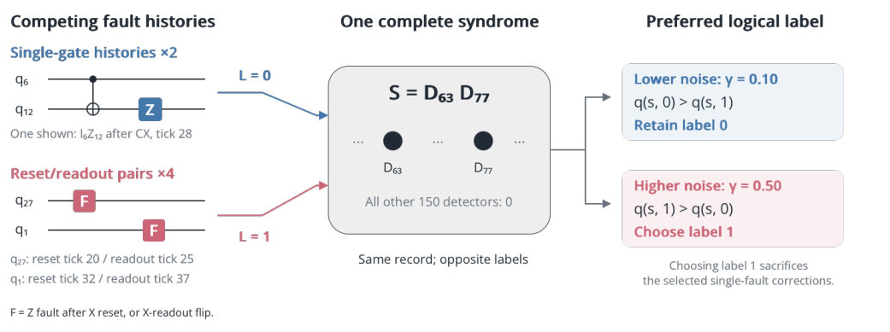
<figcaption class="paper-figure-caption"><b>Fig 1.</b> FIG. 1. Competing fault histories for the complete record S = D63D77, with all other 150 detector bits zero. The upper branch shows one of two single-gate histories carrying L = 0; the lower branch represents four reset/readout pairs carrying L = 1. Each F marker denotes either a Z fault after an X-basis reset or an X-readout flip: on q27 at tick 20 or 25, and on q1 at tick 32 or 37, respectively. The class probabilities favor label zero at γ = 0.10 and label one at γ = 0.50. Changing the decision can reduce average parity error while sacrificing correction of the identified single-gate faults. Circuit excerpts are schematic; the full fault signatures were independently checked.</figcaption>
</figure>
<figure class="paper-figure-card">
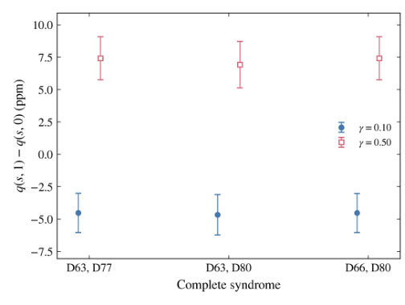
<figcaption class="paper-figure-caption"><b>Fig 2.</b> FIG. 2. Joint-probability differences for the three complete syndromes at two noise strengths. Intervals have simultaneous 95% coverage in the expanded-support experiment, with ten million background samples per scale.</figcaption>
</figure>
<figure class="paper-figure-card">
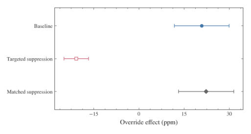
<figcaption class="paper-figure-caption"><b>Fig 3.</b> FIG. 4. Override effect for baseline, targeted suppression, and matched suppression. Each condition uses twenty million samples, independent of the noise sweep. The estimates reuse the original control experiment; their displayed intervals use the broader retrospective 27 × 10 family shared with the dense sweeps.</figcaption>
</figure>
<figure class="paper-figure-card">
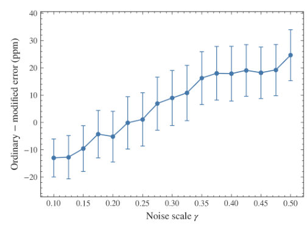
<figcaption class="paper-figure-caption"><b>Fig 4.</b> FIG. 3. Paired override effect at seventeen noise scales, with twenty million shots per point. Positive values favor the modification. Intervals use the retrospective simultaneous 95% family of 27 displayed conditions and ten binomial marginals per condition. Six scales reuse the initial sweep; eleven are later additions. Lines connect sampled conditions, not fitted values. The points from γ = 0.175 through 0.30 are unresolved.</figcaption>
</figure>
<figure class="paper-figure-card">
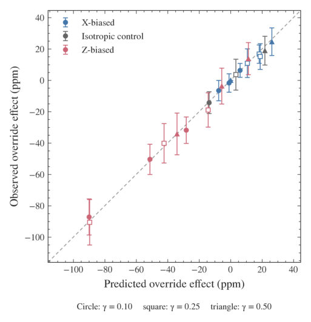
<figcaption class="paper-figure-caption"><b>Fig 5.</b> FIG. 5. Prediction versus confirmation for the fixed label- one rule in eighteen mixed-bias conditions and three isotropic controls. Color distinguishes the noise composition; circles, squares, and triangles denote γ = 0.10, 0.25, 0.50. Each point uses twenty million fresh shots. Intervals retain the original simultaneous 21 × 14 confirmation family. The dashed line is equality, not a fit. Two exact policy identities coincide at the origin. These points evaluate the fixed rule. Within the eighteen mixed-bias conditions, the prediction-selected policy instead gives six resolved benefits and twelve identities.</figcaption>
</figure>
</div>

<p><strong>Summary.</strong> This work analyzes the ambiguity in lattice-surgery decoding where multiple physical fault paths can yield the same measurement outcome but imply opposite logical states. By quantifying the performance trade-offs using full-syndrome probabilities and testing targeted channel suppressions, the authors map the limits of current decoding assumptions. The results provide a detailed, quantitative understanding of how noise affects the choice between competing fault correction histories.</p>
<p><strong>Why it may be interesting.</strong> The detailed analysis of finite-noise decoding trade-offs and the connection to specific physical error channels provides concrete, quantitative insights into the limitations of current fault-tolerance schemes.</p>
<details>
<summary>Detailed structure</summary>
<p><strong>Main problem.</strong> The paper investigates the ambiguity arising when different physical fault histories can produce the same detector record but carry opposite logical labels during lattice surgery parity measurements.</p>
<p><strong>Main result.</strong> The analysis quantifies the trade-off in decoding performance, showing that while changing single-fault decisions can be beneficial at higher noise, the overall gain is small and the mechanism's predictive power is limited to specific physical channels.</p>
<p><strong>Method.</strong> The authors use maximum-likelihood methods, full-syndrome probability calculations, and targeted channel attenuation to compare different decoding strategies.</p>
<p><strong>Model / system.</strong> The study models quantum error correction using lattice surgery to perform logical parity measurements, focusing on the competition between single-gate faults and pairs of reset/readout faults.</p>
<p><strong>Key observables.</strong> Logical-parity risk $R(D)$, the difference in risk $\Delta$, and the cost/benefit of retaining or modifying single-fault decisions.</p>
<p><strong>Important parameters / regimes.</strong> Noise strength ($\gamma$), confidence bounds (95%), and specific physical channels implicated in the fault histories.</p>
<p><strong>Assumptions / limitations.</strong> The analysis relies on comparing specific decoding strategies (e.g., minimum-weight matching vs. fixed modification) and the predictive utility is shown only on a finite grid.</p>
<p><strong>Figures summary.</strong> Figures illustrate competing fault histories, joint-probability differences across syndromes at varying noise strengths, and the effect of targeted versus matched channel suppression.</p>
<p><strong>Paper structure.</strong> The paper progresses by defining the ambiguity, quantifying the error using full-syndrome probabilities, testing the physical explanation via channel attenuation, and finally assessing the predictive scope of the derived trade-offs.</p>
</details>
<details>
<summary>Abstract</summary>
<p>Different physical faults can produce the same detector record while carrying opposite logical labels. We investigate the consequence of this ambiguity for a lattice surgery parity measurement. In a distance-three merge--split circuit, single-gate faults compete with reset/readout pairs on three complete syndromes. Full-syndrome probabilities give a simultaneous 95\% lower confidence bound of $16.64$ parts per million on the cost of retaining the selected single-fault decisions at one noise point. Changing those decisions is harmful at low noise and beneficial at higher noise. To test the physical explanation, we attenuate eight implicated channels and compare the change in override effect with a matched non-target suppression. The two interventions change the decoder effect differently, resolving a contribution associated with those locations. Likelihood predictions fixed before sampling then select useful decisions under mixed Pauli noise and after extending preparation and recovery. The latter test gives a reduction of $13.20$ parts per million, with simultaneous 95\% bounds $[5.55,20.84]$. The mechanism is limited in scope: the revised decisions give up certain single-fault corrections, and under the same witness-selection rule no candidate is identified in the fully expanded distance-five circuit. These results connect a finite-noise decoding trade-off to specific physical channels and test how far that explanation can be used to predict logical-parity performance.</p>
</details>
<p><sub><a href="#top">↑ back to top</a></sub></p>

<p><a id="paper-2610.34364"></a></p>
<h3 id="exact-identification-of-quantum-correlations-in-the-minimal-bell-scenario"><a href="http://arxiv.org/abs/2610.34364v1">Exact Identification of Quantum Correlations in the Minimal Bell Scenario</a></h3>
<p><strong>Authors:</strong> Liang-Liang Sun, Jie Wang, Sixia Yu<br>
<strong>Type:</strong> theory · <strong>Category:</strong> quantum information and computing · <strong>PDF:</strong> <a href="https://arxiv.org/pdf/2610.34364v1">https://arxiv.org/pdf/2610.34364v1</a><br>
<strong>Analysis basis:</strong> full PDF text, analyzed in chunks
<strong>Topic relevance:</strong> <code>quantum measurements</code> <strong>2/5</strong></p>
<div class="figure-strip-hint">↔ Scroll figures horizontally</div>
<div class="paper-figures-scroll">
<figure class="paper-figure-card">
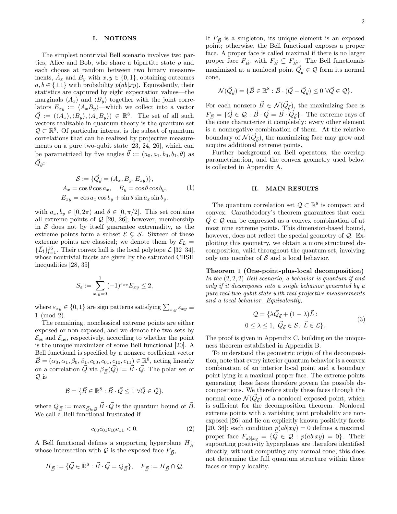
<figcaption class="paper-figure-caption"><b>Fig 1.</b> Low-resolution page preview, page 2</figcaption>
</figure>
<figure class="paper-figure-card">
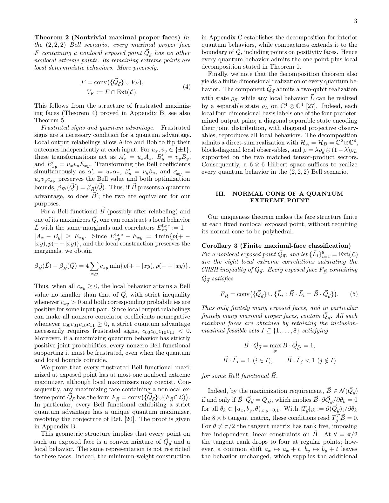
<figcaption class="paper-figure-caption"><b>Fig 2.</b> Low-resolution page preview, page 3</figcaption>
</figure>
<figure class="paper-figure-card">
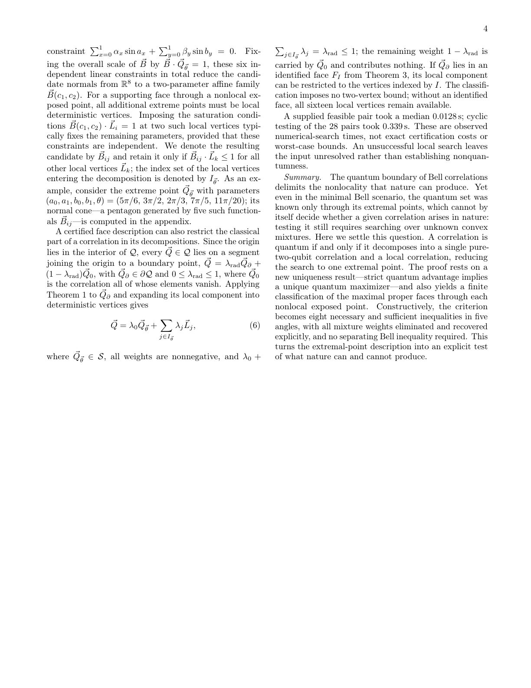
<figcaption class="paper-figure-caption"><b>Fig 3.</b> Low-resolution page preview, page 4</figcaption>
</figure>
<figure class="paper-figure-card">
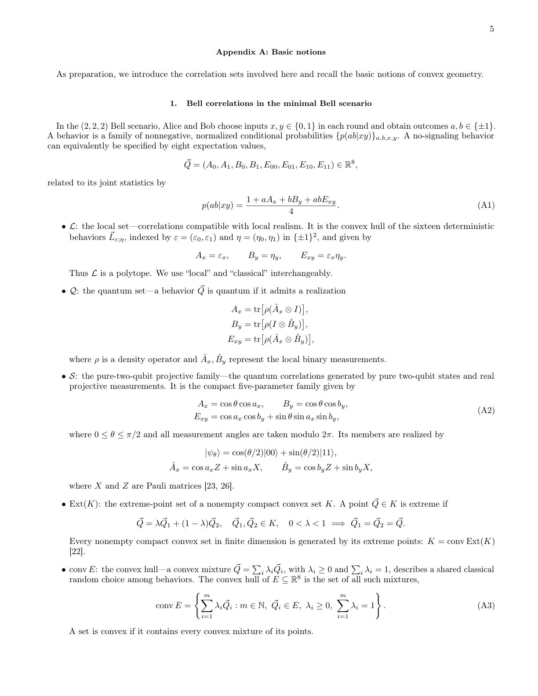
<figcaption class="paper-figure-caption"><b>Fig 4.</b> Low-resolution page preview, page 5</figcaption>
</figure>
<figure class="paper-figure-card">
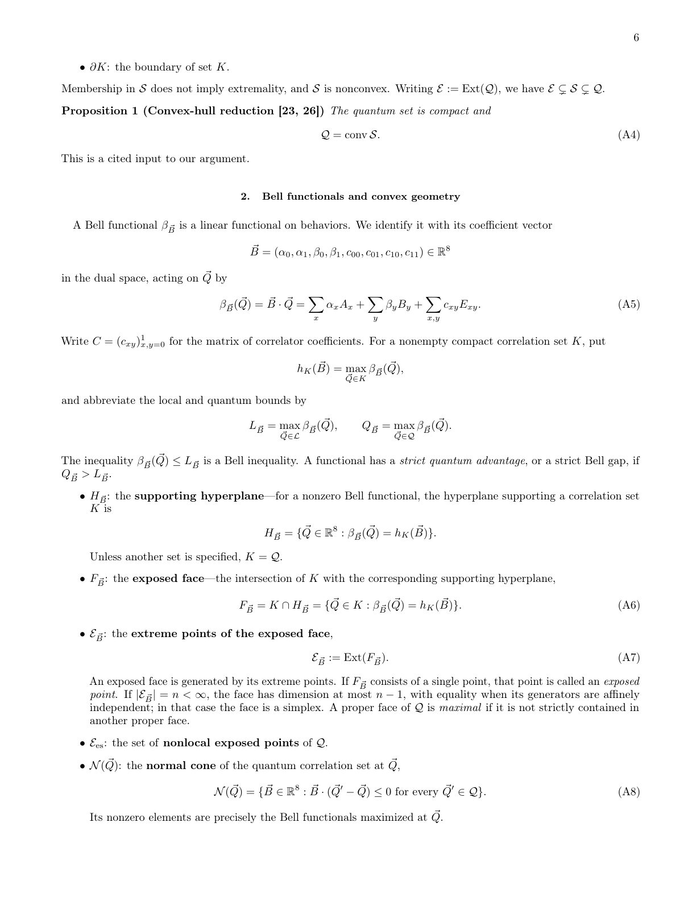
<figcaption class="paper-figure-caption"><b>Fig 5.</b> Low-resolution page preview, page 6</figcaption>
</figure>
</div>

<p><strong>Summary.</strong> This work provides a definitive mathematical criterion to distinguish true quantum correlations from classical or nonphysical ones within the Bell test framework. By proving that any quantum correlation must decompose into a pure quantum component and a local component, it resolves a long-standing open problem in quantum foundations. This offers a powerful, computable tool for testing the fundamental principles underlying quantum mechanics.</p>
<p><strong>Why it may be interesting.</strong> The rigorous mathematical framework for certifying quantum correlations provides fundamental tools applicable to understanding entanglement witnesses and resource theories in quantum information.</p>
<details>
<summary>Detailed structure</summary>
<p><strong>Main problem.</strong> The paper aims to rigorously characterize the boundary separating physically realizable quantum correlations from nonphysical ones, particularly in the minimal Bell scenario.</p>
<p><strong>Main result.</strong> It establishes a necessary and sufficient criterion stating that a correlation is quantum if and only if it can be decomposed into a single pure-two-qubit correlation and a classical (local) correlation.</p>
<p><strong>Method.</strong> The authors employ convex geometry, analyzing the normal cone and exposed faces of the quantum correlation set using linear functionals and decomposition theorems.</p>
<p><strong>Model / system.</strong> The study focuses on the (2, 2, 2) Bell scenario, involving two parties (Alice and Bob) making binary measurements on a shared bipartite quantum state.</p>
<p><strong>Key observables.</strong> The correlation vector $\vec{Q} \in \mathbb{R}^8$, which captures expectation values of measurement outcomes.</p>
<p><strong>Important parameters / regimes.</strong> The five angles $\vec{\theta}$ parameterizing the pure two-qubit state, and the weights $\lambda$ governing the decomposition.</p>
<p><strong>Assumptions / limitations.</strong> The analysis is confined to the minimal Bell scenario, and the core theorems rely on the geometric properties of the quantum set $Q$.</p>
<p><strong>Paper structure.</strong> The paper progresses from defining the quantum boundary problem to proving the one-point-plus-local decomposition theorem, followed by detailed geometric analysis of the normal cone and the structure of maximal proper faces.</p>
</details>
<details>
<summary>Abstract</summary>
<p>Bell nonlocality places the long-standing philosophical disputes over the nature of quantum theory on a mathematically rigorous, experimentally testable footing, positioning quantum mechanics between local realism and the most general no-signaling theories. Yet the precise quantum boundary has remained elusive even in the minimal Bell scenario, where the extreme points generating the set are known. Here we characterize this boundary through a computable necessary and sufficient criterion: a correlation is quantum if and only if it can be decomposed into an extreme quantum correlation and a classical correlation. The criterion follows from our proof that every Bell functional exhibiting quantum advantage admits a unique quantum maximizer. We further classify the finitely many maximal-face structures containing each nonlocal exposed point according to their local deterministic vertices. By sharply distinguishing physically realizable correlations from nonphysical ones, these results resolve a long-standing open problem and provide a new foundation for identifying the principles underlying quantum theory and determining the ultimate information-theoretic limits of quantum correlations.</p>
</details>
<p><sub><a href="#top">↑ back to top</a></sub></p>

<p><a id="paper-2610.34143"></a></p>
<h3 id="feasibility-of-distributed-fault-tolerant-quantum-computing-from-quantum-links-to-algorithms"><a href="http://arxiv.org/abs/2610.34143v1">Feasibility of Distributed Fault-Tolerant Quantum Computing: From Quantum Links to Algorithms</a></h3>
<p><strong>Authors:</strong> Takumi Kobayashi, Hodaka Kurokawa, Yasunari Suzuki, Hideo Kosaka<br>
<strong>Type:</strong> theory · <strong>Category:</strong> quantum information and computing · <strong>PDF:</strong> <a href="https://arxiv.org/pdf/2610.34143v1">https://arxiv.org/pdf/2610.34143v1</a><br>
<strong>Analysis basis:</strong> full PDF text, analyzed in chunks
<strong>Topic relevance:</strong> <code>QC/QI experiment</code> <strong>2/5</strong></p>
<div class="figure-strip-hint">↔ Scroll figures horizontally</div>
<div class="paper-figures-scroll">
<figure class="paper-figure-card">
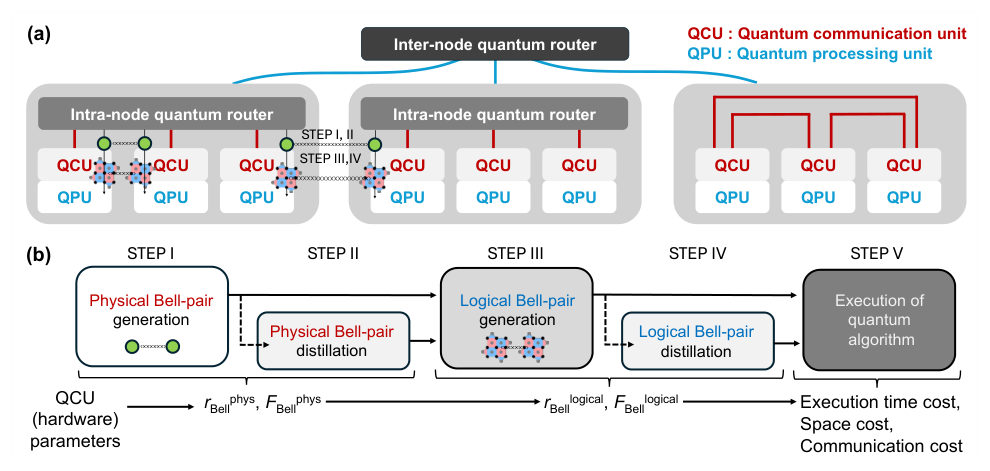
<figcaption class="paper-figure-caption"><b>Fig 1.</b> FIG. 1. Architecture of a distributed fault-tolerant quantum computer and the resource-estimation procedure. (a) Schematic of a distributed fault-tolerant quantum computer. Each node contains quantum processing units (QPUs) and quantum communication units (QCUs). The QPUs within a node are connected via an intra-node router, whereas QPUs in different nodes are linked by an inter-node router. Direct connection between nodes is also possible as shown in the rightmost node. (b) Resource-estimation procedure for distributed quantum computation. The physical Bell-pair generation rate rphys Bell and its fidelity F phys Bell are specified as parameters determined by the quantum communication...</figcaption>
</figure>
<figure class="paper-figure-card">
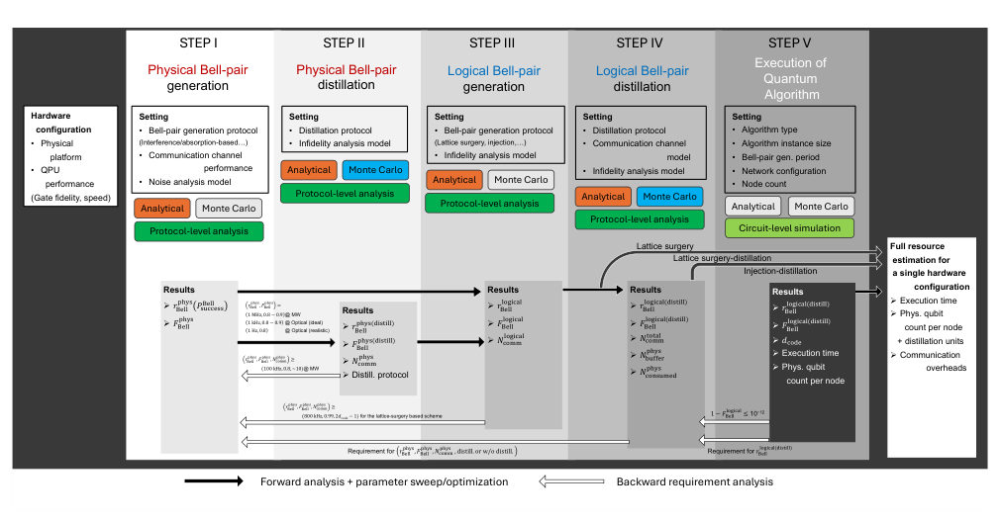
<figcaption class="paper-figure-caption"><b>Fig 2.</b> FIG. 2. Detailed workflow of the resource analysis outlined in Fig. 1. Steps I–V connect physical Bell-pair generation and distillation, logical Bell-pair generation and distillation, and quantum-algorithm execution. Each step combines independently specified settings, including protocols, noise models, and algorithm or network configurations, with parameters obtained from preceding steps, such as Bell-pair generation rates, fidelities, and communication-channel requirements. Black arrows indicate forward analysis and parameter sweeps, whereas white arrows indicate backward analysis to estimate the communication performance required to satisfy target error rates and computational...</figcaption>
</figure>
<figure class="paper-figure-card">
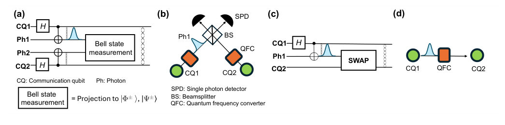
<figcaption class="paper-figure-caption"><b>Fig 3.</b> FIG. 3. Schematic of remote physical Bell-pair generation schemes. (a) Quantum circuit for generating a physical Bell pair between commu- nication qubits (CQs). In each node, entanglement between a communication qubit and a photon (Ph) is generated. A Bell-state measurement on the photons from the two nodes generates a physical Bell pair between the communication qubits. (b) Typical physical implementation of (a). A communication qubit in each node emits an entangled photon. A quantum frequency converter (QFC) adjusts the photon frequency so that the photons can interfere. A beamsplitter at the midpoint erases which-path information, and the photons are detected using single-photon...</figcaption>
</figure>
<figure class="paper-figure-card">
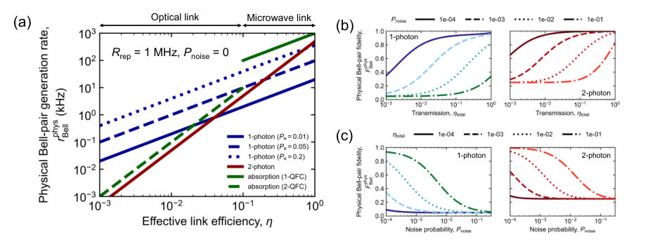
<figcaption class="paper-figure-caption"><b>Fig 4.</b> FIG. 4. Physical Bell-pair generation rate and fidelity. (a) Physical Bell-pair generation rate rphys Bell as a function of the effective single-link efficiency η (Pnoise = 0). (b) Physical Bell-pair fidelity F phys Bell as a function of ηtotal for different noise-click probabilities Pnoise for the single- photon protocol (Pe = 0.05) (left) and the two-photon protocol (right). (c) F phys Bell as a function of Pnoise for the single-photon protocol (left) and the two-photon protocol (right).</figcaption>
</figure>
<figure class="paper-figure-card">
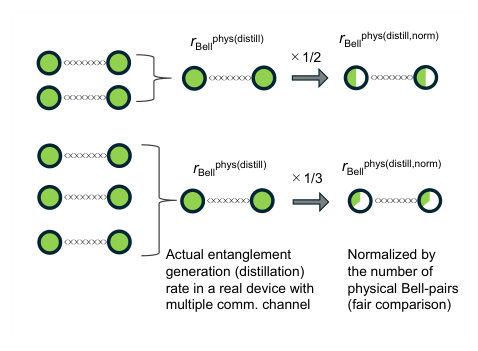
<figcaption class="paper-figure-caption"><b>Fig 5.</b> FIG. 6. Definition of the physical Bell-pair distillation rate. In the situation shown schematically, two (three) parallel communication channels are required to supply physical Bell pairs for the Z2B (ZX3B) protocol. The resulting rate is the physical Bell-pair distillation rate rphys(distill) Bell which corresponds to the actual physical Bell-pair distil- lation rate in a real device. However, differences in the number of communication channels make comparisons among different distilla- tion protocols unfair. Thus, we define a normalized physical Bell-pair distillation rate rphys(distill,norm) Bell by dividing rphys(distill) Bell by the minimum required number of communication channels N...</figcaption>
</figure>
</div>

<p><strong>Summary.</strong> This paper analyzes the resource overheads for building fault-tolerant quantum computers using distributed architectures connected by quantum links. By performing a detailed resource analysis, the authors show that while limited communication resources can drastically cut down on local qubit requirements, this improvement necessitates a significant slowdown in computation time. It offers a quantitative framework for balancing hardware link performance against computational speed.</p>
<p><strong>Why it may be interesting.</strong> This work provides crucial quantitative metrics for scaling quantum computation, directly addressing the engineering bottleneck of connecting many smaller, imperfect quantum modules into a functional, large-scale machine.</p>
<details>
<summary>Detailed structure</summary>
<p><strong>Main problem.</strong> Assessing the feasibility and resource requirements for building large-scale, fault-tolerant quantum computers by connecting multiple smaller processors via quantum networks.</p>
<p><strong>Main result.</strong> Distributed architectures can significantly reduce the required physical qubits per node using limited communication links, but this comes at the expense of a substantial increase in overall execution time.</p>
<p><strong>Method.</strong> The work employs a comprehensive, multi-stage resource analysis that tracks physical and logical Bell-pair generation, distillation, and consumption rates across the entire computation workflow.</p>
<p><strong>Model / system.</strong> The system modeled is a distributed quantum network comprising superconducting processors (nodes) interconnected by quantum links (microwave or optical). The analysis follows a sequence from physical Bell-pair generation to final algorithm execution.</p>
<p><strong>Key observables.</strong> Physical and logical Bell-pair generation/distillation rates ($r_{	ext{Bell}}$), fidelities ($F_{	ext{Bell}}$), and the resulting space, time, and communication overheads.</p>
<p><strong>Important parameters / regimes.</strong> Link parameters such as a 1 MHz physical Bell-pair generation rate and 90% fidelity are used in forward-looking assumptions; target logical fidelity is often set to $10^{-12}$.</p>
<p><strong>Assumptions / limitations.</strong> The analysis simplifies the case by focusing on logical Bell-pair consumption (teleportation) rather than direct remote two-qubit logical operations, and relies on specific, forward-looking hardware performance estimates.</p>
<p><strong>Figures summary.</strong> Figure 1(b) details the five-step resource estimation procedure, from physical Bell-pair generation through to algorithm execution. Figure 2 outlines the full workflow, detailing steps from physical link generation to final resource estimation.</p>
<p><strong>Paper structure.</strong> The paper follows a structured resource analysis: first, calculating physical Bell-pair generation (Step I); second, performing physical distillation (Step II); third, generating logical Bell-pairs (Step III); fourth, performing logical distillation (Step IV); and finally, estimating the overall resource overhead for the quantum algorithm (Step V).</p>
</details>
<details>
<summary>Abstract</summary>
<p>Practical fault-tolerant quantum computation requires a large number of physical qubits, posing a major challenge for scaling up individual quantum processors. Distributed architectures offer a promising solution by interconnecting multiple processors through quantum networks. However, remote Bell-pair generation remains technically demanding, making it essential to assess computational performance under limited communication resources. In this work, we present a comprehensive resource analysis of distributed fault-tolerant quantum computation using superconducting processors connected by microwave or optical links. We show that even a single physical communication channel per node can substantially reduce the physical-qubit requirements per node under experimentally motivated, forward-looking microwave-link assumptions of a 1 MHz physical Bell-pair generation rate and 90% fidelity, although at the cost of a roughly tenfold increase in execution time. Conversely, reducing the execution-time overhead requires substantially greater communication resources, including higher Bell-pair fidelities and extensive multiplexing. These results demonstrate the potential feasibility of distributed fault-tolerant quantum computation with limited communication resources and provide a quantitative basis for balancing quantum-link performance, processor size, and execution time.</p>
</details>
<p><sub><a href="#top">↑ back to top</a></sub></p>

<p><a id="paper-2610.33607"></a></p>
<h3 id="krylov-geometry-and-optimal-recovery-under-uncertain-coherent-noise"><a href="http://arxiv.org/abs/2610.33607v1">Krylov geometry and optimal recovery under uncertain coherent noise</a></h3>
<p><strong>Authors:</strong> Abhishek Chowdhury<br>
<strong>Type:</strong> theory · <strong>Category:</strong> quantum information and computing · <strong>PDF:</strong> <a href="https://arxiv.org/pdf/2610.33607v1">https://arxiv.org/pdf/2610.33607v1</a><br>
<strong>Analysis basis:</strong> full PDF text, analyzed in chunks
<strong>Topic relevance:</strong> <code>quantum measurements</code> <strong>2/5</strong></p>
<div class="figure-strip-hint">↔ Scroll figures horizontally</div>
<div class="paper-figures-scroll">
<figure class="paper-figure-card">
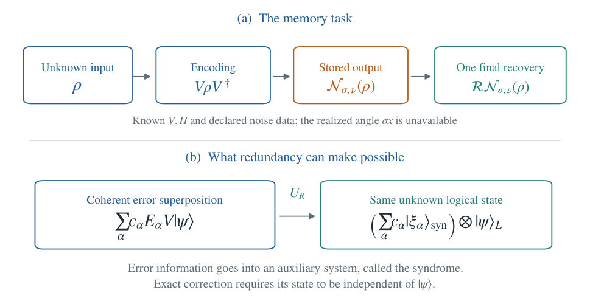
<figcaption class="paper-figure-caption"><b>Fig 1.</b> Figure 1: The encoded-memory problem. (a) One final recovery acts on the averaged physical output. It knows the encoding, generator and declared noise information, but not the angle in the stored run. (b) Exact error correction sends every allowed error superposition to an auxiliary vector tensored with the same unknown logical state. The auxiliary vector can carry error amplitudes but must be independent of the logical input. Discarding it then preserves the stored quantum information.</figcaption>
</figure>
<figure class="paper-figure-card">
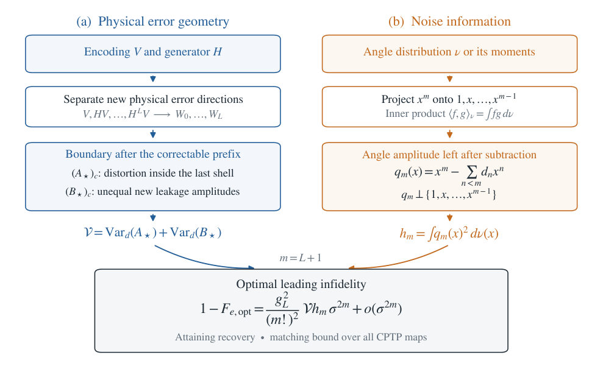
<figcaption class="paper-figure-caption"><b>Fig 2.</b> Figure 2: The two projections determining the leading optimal recovery error. Physical orthogonalization separates undistorted images of the logical register. The first potentially harmful action, at degree m = L + 1, has logical distortion V after its scalar part and reversible orientation are removed. Statistical orthogonalization subtracts lower angle powers from xm, leaving a mean-square residual hm. The factor gL is the product of hoppings through the correctable prefix; multiplication by g2 L/(m!)2 gives the leading optimal infidelity coefficient. The constructed recovery attains it, and the converse covers all CPTP recoveries under Proposition 2’s hypotheses.</figcaption>
</figure>
<figure class="paper-figure-card">
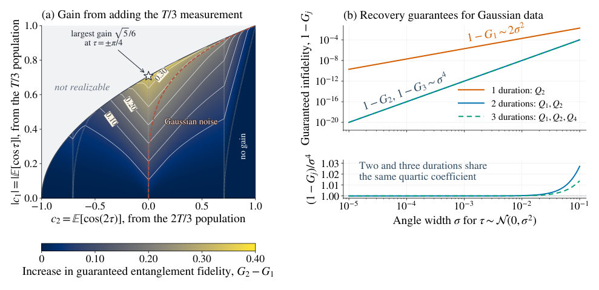
<figcaption class="paper-figure-caption"><b>Fig 3.</b> Figure 3: Exact calibration-dependent recovery of the four-photon memory. The angle is τ = ωT, and Qk is the mean first-shell population at duration kT/3. (a) Gain G2(c1, c2) −G1(c2) from adding the T/3 mean to the 2T/3 mean, with ck = 1 −9Qk/4, the measured value of E[cos kτ]. The guarantee is invariant under c1 7→−c1, so the plot uses c1 ≥0. Each point is a possible pair of measured means. The shaded pairs are not realizable, since every angle distribution has c2 1 ≤E[cos2 τ] = (1 + c2)/2. The gain is largest on the upper edge, where every run has the same cosine of the storage angle and c1, c2 therefore also fix c4; the star marks the maximum √</figcaption>
</figure>
<figure class="paper-figure-card">
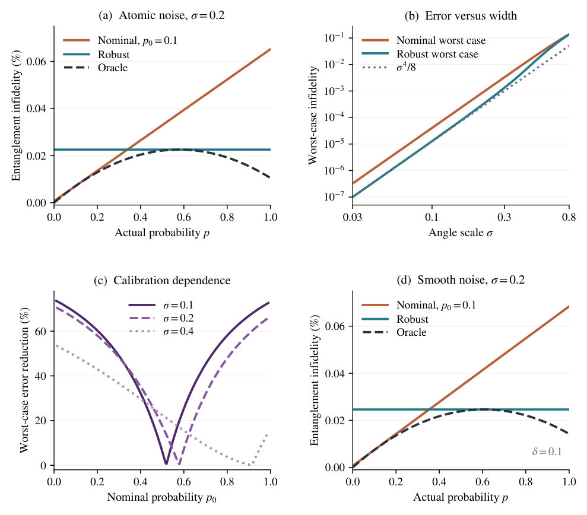
<figcaption class="paper-figure-caption"><b>Fig 4.</b> Figure 4: Recovery on the same optical code with different noise information in decoder design. The angle is zero with probability 1 −p and equals each of ±σ with probability p/2. Panels (a), (b) and (d) use a nominal decoder designed for p0 = 1/10; panel (c) varies p0. The robust decoder knows p ∈[0, 1], and the oracle knows the actual p. None knows the realized angle. (a) Actual-channel infidelity at σ = 1/5. Robustness improves the worst case at a cost near the nominal channel. (b) Worst-case errors over p, compared with the robust quartic coefficient. (c) Percentage reduction relative to the nominal worst-case infidelity, 100(1 −ER/Enom). Here ER and Enom are the robust and nominal...</figcaption>
</figure>
<figure class="paper-figure-card">
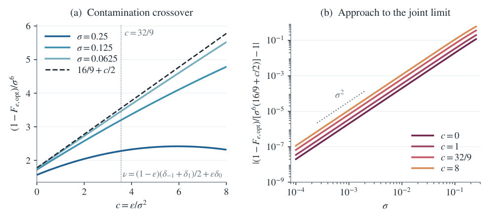
<figcaption class="paper-figure-caption"><b>Fig 5.</b> Figure 5: Joint weak-noise and contamination limit for the optical code, with ν = (1 −ϵ)(δ−1 + δ1)/2 + ϵδ0. (a) Exact prior-informed optimal infidelity divided by σ6 along ϵ = cσ2. Recovery is selected separately for each specified prior. The dashed line is the proved limit 16/9 +c/2; its binary and contamination contributions are equal at c = 32/9. (b) Relative discrepancy from this limit at fixed c. The uniform limit is analytical; finite-width curves illustrate its range of accuracy.</figcaption>
</figure>
</div>

<p><strong>Summary.</strong> This paper establishes the fundamental limits on recovering quantum information corrupted by unknown coherent noise. It uses Krylov geometry and moment analysis to derive precise bounds relating the achievable fidelity to the information extracted from calibration measurements. The results are crucial for designing robust quantum memories and error correction protocols.</p>
<p><strong>Why it may be interesting.</strong> It provides deep theoretical bounds on the performance of quantum memories under realistic, partially characterized noise, connecting abstract mathematical tools like Krylov theory to concrete physical limits in quantum optics.</p>
<details>
<summary>Detailed structure</summary>
<p><strong>Main problem.</strong> Determining the fundamental, combined limit for optimal quantum state recovery from coherent rotations when the noise angle is unobserved, considering both the encoding scheme and the information gained from calibration measurements.</p>
<p><strong>Main result.</strong> The optimal worst-input error is rigorously bounded by the entanglement infidelity, with specific scaling laws derived based on the order of correctable error moments ($eta_r$).</p>
<p><strong>Method.</strong> The analysis employs Krylov geometry to separate correctable error amplitudes from state-dependent distortions, utilizing moment expansions and finite optimization techniques.</p>
<p><strong>Model / system.</strong> The system models quantum information stored in a memory subjected to noise modeled as a coherent rotation generated by a Hamiltonian $H$ acting via $e^{-i\sigma x H}$, where $x$ is an unobserved random angle.</p>
<p><strong>Key observables.</strong> Entanglement Fidelity ($F_e$), Optimal Worst-Input Error, and the calibration statistic $eta_r = E[\sin^{2r}(	heta/2)]$.</p>
<p><strong>Important parameters / regimes.</strong> Logical dimension ($d$), noise scale ($\sigma$), and the order of the moment measurement ($r$).</p>
<p><strong>Assumptions / limitations.</strong> The analysis assumes specific hypotheses regarding the correctable generator powers and moment positivity conditions to achieve exact finite optimization.</p>
<p><strong>Figures summary.</strong> Figure 5 (from Chunk 3 notes) illustrates the joint weak-noise and contamination limit for an optical code, plotting infidelity/$\sigma^6$ versus $\sigma$ for various contamination ratios.</p>
<p><strong>Paper structure.</strong> The paper develops from the general noise channel definition (Eq. 2) to deriving optimal recovery guarantees using entanglement fidelity, analyzing the separation of error into physical distortion and statistical residual, and concluding with specific scaling laws based on calibration data.</p>
</details>
<details>
<summary>Abstract</summary>
<p>Recovery from a coherent rotation with an unobserved angle depends on both the encoding and what calibration reveals about the noise. We determine their combined limit for a known finite-dimensional generator and one final recovery. Two polynomial projections organize the answer. A physical Krylov chain separates correctable error amplitudes from their first state-dependent distortion; projection onto lower-angle powers identifies the part that a coherent decoder can cancel. Under explicit rank and moment conditions, their combination gives the exact leading optimal entanglement infidelity at weak noise and a recovery attaining it for any finite logical dimension. The optimal worst-input error lies between one and $d$ times that infidelity at leading order, for logical dimension $d$. When the angle distribution is unknown, we optimize one decoder for every distribution compatible with the calibration. When spectral and calibration frequencies are integer multiples of a common frequency, moment positivity turns this into an exact finite optimization. Small measured means can still allow rare finite rotations. If the sole calibration datum is $β_r=\mathbb E[\sin^{2r}(θ/2)]$, with $θ$ the wrapped rotation phase at that common frequency, the optimal worst-prior infidelity is $O(β_r)$ exactly when generator powers through degree $r-1$ are correctable. When the first uncorrectable power has degree $m<r$, the optimal loss scales as $β_r^{m/r}$, with a sharp coefficient fixed by a universal moment problem. In a loss-free four-photon memory, population measurements at two calibration durations retain the fully informed quartic error coefficient for a fixed symmetric narrow-noise family with positive variance and finite fourth moment; a single duration permits loss quadratic in the noise width.</p>
</details>
<p><sub><a href="#top">↑ back to top</a></sub></p>

<p><a id="paper-2610.34596"></a></p>
<h3 id="non-magnetic-impurities-as-a-quantum-microscope-of-finite-size-effects-in-spin-chains"><a href="http://arxiv.org/abs/2610.34596v1">Non-magnetic impurities as a quantum microscope of finite size effects in spin chains</a></h3>
<p><strong>Authors:</strong> Quentin Faure, Shintaro Takayoshi, Virginie Simonet, Béatrice Grenier, Stéphane Raymond, Eric Ressouche, Xavier Fabrèges, Pascal Lejay, Thierry Giamarchi, Sylvain Petit<br>
<strong>Type:</strong> both · <strong>Category:</strong> strongly correlated electrons · <strong>PDF:</strong> <a href="https://arxiv.org/pdf/2610.34596v1">https://arxiv.org/pdf/2610.34596v1</a><br>
<strong>Analysis basis:</strong> full PDF text, analyzed in chunks
<strong>Topic relevance:</strong> <code>analog quantum simulation</code> <strong>2/5</strong></p>
<div class="figure-strip-hint">↔ Scroll figures horizontally</div>
<div class="paper-figures-scroll">
<figure class="paper-figure-card">
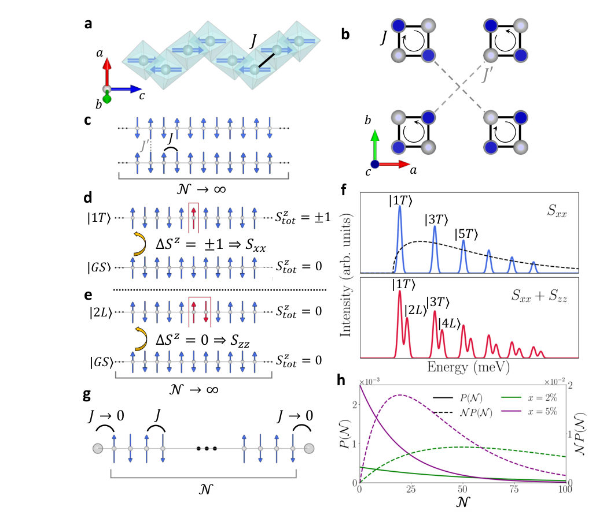
<figcaption class="paper-figure-caption"><b>Fig 1.</b> FIG. 1. Magnetic model for BaCo2V2O8 and its Mg-doped variant. (a) One-dimensional screw chain of edge-sharing Co2+ octahedra along the crystallographic c-axis in BaCo2V2O8. (b) Projection onto the (a, b) plane, showing neighboring chains; the complex interchain exchange paths yield the average effective antiferromagnetic diagonal coupling J′ (dashed lines). (c) Min- imal magnetic model consisting of two antiferromagnetic S = 1</figcaption>
</figure>
<figure class="paper-figure-card">
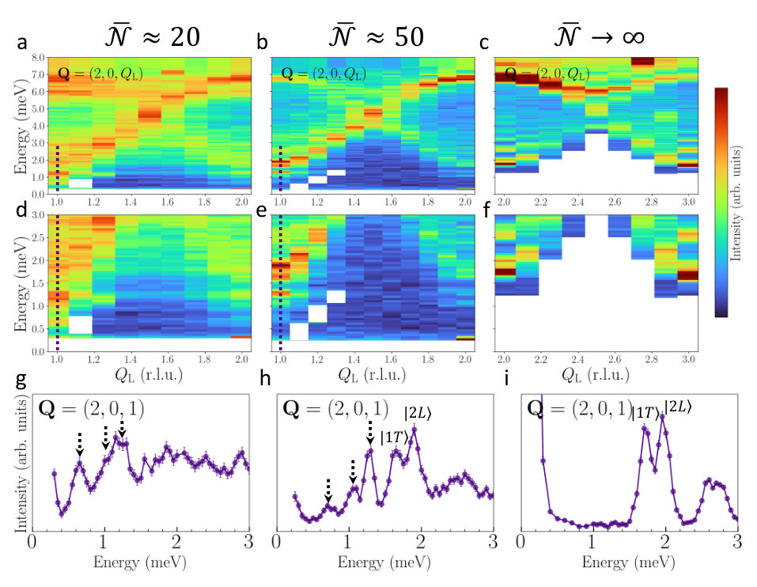
<figcaption class="paper-figure-caption"><b>Fig 2.</b> FIG. 2. Spin dynamics of Ba(Co1−xMgx)2V2O8. (a–c) Inelastic neutron scattering intensity maps of the intrachain dispersion measured along Q = (2, 0, QL) at T = 1.5 K for x = 5%, 2%, and 0, corresponding to chains with average lengths ¯ N ≃20, 50, and ∞, respectively. Although the Brillouin zones displayed for the doped and undoped compounds differ, they are crystallographically equivalent. For clarity, the spurious (parasitic) intensity previously reported in Ref. [48], extending from Q ≈(2, 0, 1.1) at E ≈0.5 meV to Q ≈(2, 0, 1.25) at E ≈1.1 meV, has been removed (see the Supplemental Material for details). (d–f) Enlarged views of panels (a–c) in the low-energy range between 0 and 3 meV....</figcaption>
</figure>
<figure class="paper-figure-card">
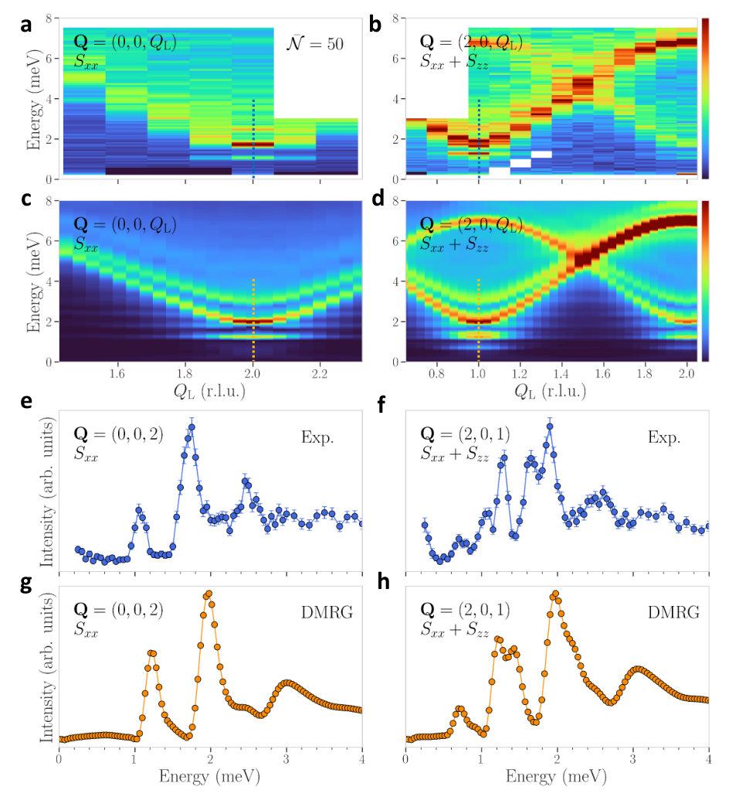
<figcaption class="paper-figure-caption"><b>Fig 3.</b> FIG. 3. Transverse and longitudinal character of the emergent modes: (a-b) Inelastic neu- tron scattering intensity maps of the intrachain dispersion along Q = (0, 0, QL) and Q = (2, 0, QL) for x = 2% ( ¯ N ≃50) and measured at T = 1.5 K. The former is sensitive to transverse fluctua- tions Sxx only while the later is related to both transverse Sxx and longitudinal Szz fluctuations. (c-d) Numerically calculated DMRG (see text) corresponding dispersion maps. (e-h) Comparison between experimental (blue points) and calculated (orange points) intensity for Q-constant energy scans at Q = (0, 0, 2) (e,g) and Q = (2, 0, 1) (f,h) (corresponding to the vertical dashed lines in panels (a–d)).</figcaption>
</figure>
<figure class="paper-figure-card">
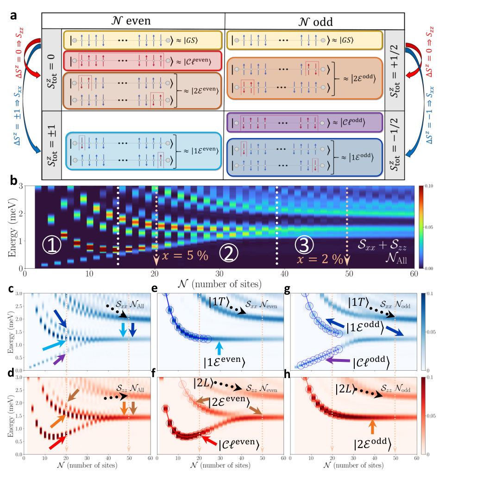
<figcaption class="paper-figure-caption"><b>Fig 4.</b> FIG. 4. Quantum nature of cluster and edge modes revealed by ED and DMRG calculations. (a) Relevant Ising-limit basis configurations in the total-spin sectors Sz tot = 0, ±1 for even N, and Sz tot = ±1</figcaption>
</figure>
<figure class="paper-figure-card">
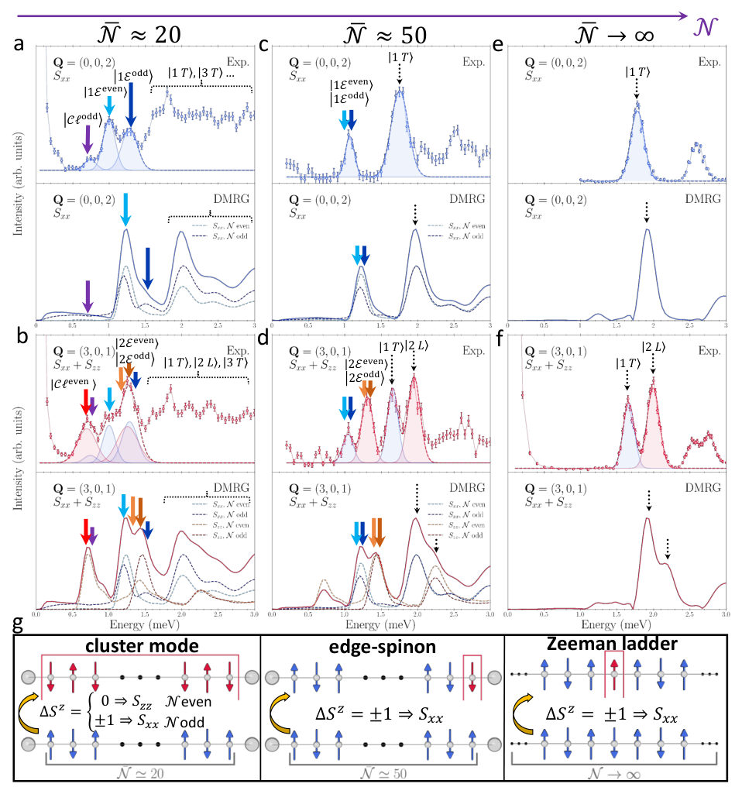
<figcaption class="paper-figure-caption"><b>Fig 5.</b> FIG. 5. Evolution of the lowest-energy modes with increasing chain length. (a–f) INS spectra (open circles) and DMRG calculations (thick solid lines) for x = 5%, 2%, and 0, corresponding to average chain lengths ¯ N ≈20, 50, and ∞, respectively. Thin solid lines in the experimental (Exp.) panels show fits to the INS data, highlighting the excitation modes identified by DMRG. Dashed lines below the DMRG spectra show the even- and odd-chain contributions to Sxx (light and dark blue) and Szz (orange and brown), respectively, with intensities multiplied by a factor of 3 for clarity. Measurements and calculations at Q = (0, 0, 2) (blue) and Q = (3, 0, 1) (red) probe Sxx and Sxx+Szz,...</figcaption>
</figure>
</div>

<p><strong>Summary.</strong> This paper uses non-magnetic impurities in a quantum antiferromagnet to create finite spin chains, allowing researchers to study finite-size quantum effects. By combining inelastic neutron scattering with DMRG calculations, the authors characterize novel, impurity-induced low-energy excitations, such as edge spinons and cluster modes, which are otherwise invisible in bulk materials.</p>
<p><strong>Why it may be interesting.</strong> The work provides a direct, experimentally verifiable method (using impurities) to probe boundary physics and quantum confinement effects in strongly correlated magnetic materials, which is highly relevant to understanding quantum materials.</p>
<details>
<summary>Detailed structure</summary>
<p><strong>Main problem.</strong> The study investigates finite-size effects in quantum spin chains, which are typically masked in the thermodynamic limit, by introducing non-magnetic impurities to create finite segments.</p>
<p><strong>Main result.</strong> The research identifies distinct, impurity-induced low-energy excitations—specifically edge-localized spinon modes and cluster modes—that are observable through inelastic neutron scattering and numerical simulations.</p>
<p><strong>Method.</strong> The study combines experimental measurements using inelastic neutron scattering (INS) on doped single crystals with advanced theoretical calculations like Density Matrix Renormalization Group (DMRG) and Exact Diagonalization (ED).</p>
<p><strong>Model / system.</strong> The system is a quasi-one-dimensional Ising-like quantum antiferromagnet, $ ext{Ba}(    ext{Co}_{1-x}   ext{Mg}_x)_2    ext{V}_2    ext{O}_8$. Non-magnetic Mg$^{2+}$ ions act as impurities, fragmenting the spin chains into finite segments governed by open boundary conditions.</p>
<p><strong>Key observables.</strong> Spin dynamical susceptibilities ($S_{xx}, S_{zz}$), the Zeeman ladder spectrum, and localized low-energy excitations (cluster and edge modes).</p>
<p><strong>Important parameters / regimes.</strong> Impurity concentration ($x=2\%, 5\%$), chain length ($N$), and the comparison between finite-size and infinite-chain limits.</p>
<p><strong>Assumptions / limitations.</strong> The analysis relies on mean-field theory for interchain coupling and assumes that the impurity doping effectively creates open boundary conditions on the spin chains.</p>
<p><strong>Figures summary.</strong> Figures compare INS intensity maps for different doping levels ($x=5\%, 2\%, 0\%$), showing the emergence of additional, nearly non-dispersive low-energy modes in the doped samples compared to the undoped (infinite) case.</p>
<p><strong>Paper structure.</strong> The paper establishes the context of finite-size effects, details the physical system and Hamiltonian, presents experimental INS data, and complements this with DMRG/ED calculations to characterize the evolution of edge and cluster excitations as a function of chain length and doping.</p>
</details>
<details>
<summary>Abstract</summary>
<p>Finite-size effects are ubiquitous in quantum matter, yet typically invisible in the thermodynamic limit; when system size is restricted, boundaries and confinement reveal modified spectra, correlations, and emergent phenomena. With growing access to well-controlled few-spin systems, these effects are now directly observable and offer a route to probing universal physics and enabling quantum information applications. Here, we study finite-size physics in the quasi-one-dimensional Ising-like quantum antiferromagnet Ba(Co$_{1-x}$Mg$_x$)$_2$V$_2$O$_8$ with $x = 2\%$ and $x = 5\%$, where non-magnetic Mg$^{2+}$ ions fragment the Co$^{2+}$ spin chains into finite segments. Combining inelastic neutron scattering and numerical calculations, we identify distinct regimes with fundamentally different low-energy quantum excitations: spinons confined to chain boundaries, and a cluster mode in shorter chains corresponding to a collective reversal of the Néel-ordered segment without classical analogue. Our results demonstrate how chemical substitution acts as a quantum microscope providing direct access to boundary-shaped excitations in strongly correlated spin systems.</p>
</details>
<p><sub><a href="#top">↑ back to top</a></sub></p>

<p><a id="paper-2610.33294"></a></p>
<h3 id="twirled-and-swirled-worlds-a-compositional-approach"><a href="http://arxiv.org/abs/2610.33294v1">Twirled and swirled worlds: a compositional approach</a></h3>
<p><strong>Authors:</strong> Sina Soltani, Thomas D. Galley, Marco Erba, John H. Selby<br>
<strong>Type:</strong> theory · <strong>Category:</strong> other · <strong>PDF:</strong> <a href="https://arxiv.org/pdf/2610.33294v1">https://arxiv.org/pdf/2610.33294v1</a><br>
<strong>Analysis basis:</strong> full PDF text, analyzed in chunks
<strong>Topic relevance:</strong> <code>quantum measurements</code> <strong>2/5</strong></p>
<div class="figure-strip-hint">↔ Scroll figures horizontally</div>
<div class="paper-figures-scroll">
<figure class="paper-figure-card">
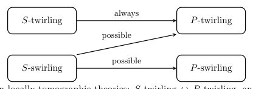
<figcaption class="paper-figure-caption"><b>Fig 1.</b> FIG. 1: Hierarchy of S- and P-twirling and swirling.</figcaption>
</figure>
</div>

<p><strong>Summary.</strong> This paper develops a rigorous, compositional framework for analyzing 'twirled' and 'swirled' quantum theories constrained by symmetries. It provides precise mathematical conditions under which these symmetry-reduced theories retain the property of process tomography. This advances the understanding of how symmetries restrict the operational description of physical processes in quantum foundations.</p>
<p><strong>Why it may be interesting.</strong> This work provides a deep, abstract mathematical framework for understanding how symmetries constrain physical theories, which is fundamental to quantum foundations and the interpretation of physical laws.</p>
<details>
<summary>Detailed structure</summary>
<p><strong>Main problem.</strong> The paper generalizes the concepts of 'twirled' and 'swirled' worlds—theories constrained by symmetry-imposed superselection rules—to a fully compositional framework for Generalized Probabilistic Theories (GPTs). It aims to understand how these symmetries affect the process tomography of the resulting invariant subtheories.</p>
<p><strong>Main result.</strong> The authors establish necessary and sufficient conditions (involving dynamically faithful states or internal classical reference frames) for an invariant subtheory to satisfy process tomography. They also characterize when entanglement is required for ancillary-free process tomography.</p>
<p><strong>Method.</strong> The methodology involves treating states, effects, and transformations uniformly as processes and defining theory actions based on their compatibility with sequential and parallel composition. The analysis heavily utilizes concepts from category theory and group representation theory.</p>
<p><strong>Model / system.</strong> The core model is the Generalized Probabilistic Theory (GPT), which describes physical theories using processes. The analysis is performed for finite-dimensional GPTs associated with compact symmetry groups.</p>
<p><strong>Key observables.</strong> Process tomography, local tomography, and the structure of invariant subtheories.</p>
<p><strong>Important parameters / regimes.</strong> The structure of the symmetry group and the representation theory of the involved systems.</p>
<p><strong>Assumptions / limitations.</strong> The analysis assumes the GPTs are finite-dimensional and relies on distinguishing between system actions and process-space actions.</p>
<p><strong>Paper structure.</strong> The paper proceeds by generalizing twirling/swirling to a compositional setting, analyzing the failure of local tomography, establishing conditions for process tomography, and concluding with specific examples like recovering bilocal classical theory.</p>
</details>
<details>
<summary>Abstract</summary>
<p>Twirled and swirled worlds describe generalised probabilistic theories (GPTs) restricted by symmetry-imposed superselection rules. We extend these constructions to a fully compositional setting for finite-dimensional GPTs and compact groups, treating states, effects, and multipartite transformations uniformly as processes. We distinguish system actions from process-space actions. We define actions on a theory as a whole by requiring the corresponding process-space actions to respect sequential and parallel composition. Averaging physical theory actions defines twirling, while averaging nonphysical theory actions defines swirling. We show that invariant subtheories might not satisfy process tomography, and establish conditions under which they do, involving invariant dynamically faithful states or internal classical reference frames. For locally tomographic parent theories, we prove that every theory symmetry admits a representation by linear system actions and that the invariant subtheory satisfies process tomography. An invariant multipartite process space fails local tomography if and only if some bipartition has sides sharing a non-trivial irreducible representation. We characterise when ancillary systems are necessary, which representations they must carry, and when entanglement is required for ancilla-free process tomography. We develop a framework for unifying twirled subtheories and extend incoherent simulations to compact groups. Finally, we recover bilocal classical theory as a twirled subtheory of classical theory and real quantum theory as a swirled subtheory of complex quantum theory, deriving their tomographic properties from their representation structure.</p>
</details>
<p><sub><a href="#top">↑ back to top</a></sub></p>

<p><a id="paper-2610.35433"></a></p>
<h3 id="population-capacity-and-the-geometry-of-thermomajorization"><a href="http://arxiv.org/abs/2610.35433v1">Population Capacity and the Geometry of Thermomajorization</a></h3>
<p><strong>Authors:</strong> F. Meroi, C. Massri, M. Losada, G. Bellomo, G. M. Bosyk<br>
<strong>Type:</strong> theory · <strong>Category:</strong> statistical mechanics · <strong>PDF:</strong> <a href="https://arxiv.org/pdf/2610.35433v1">https://arxiv.org/pdf/2610.35433v1</a><br>
<strong>Analysis basis:</strong> full PDF text, analyzed in chunks
<strong>Topic relevance:</strong> <code>Keldysh / 2PI / non-Gaussian methods</code> <strong>1/5</strong> · <code>analog quantum simulation</code> <strong>1/5</strong> · <code>correlated / nonlocal dissipation</code> <strong>1/5</strong> · <code>driven-dissipative phase transition</code> <strong>1/5</strong> · <code>methods for driven-dissipative</code> <strong>1/5</strong> · <code>non-equilibrium universality</code> <strong>1/5</strong> · <code>quantum measurements</code> <strong>1/5</strong></p>
<div class="figure-strip-hint">↔ Scroll figures horizontally</div>
<div class="paper-figures-scroll">
<figure class="paper-figure-card">
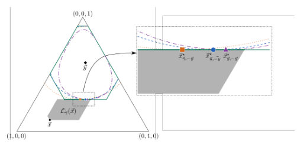
<figcaption class="paper-figure-caption"><b>Fig 1.</b> FIG. 1. Universal first-contact geometry. Population lower set L⃗γ(⃗x) (shaded polygon) for ⃗x = (7/10, 1/5, 1/10), ⃗γ = (1/2, 3/10, 1/5), and ⃗y = (9/50, 11/50, 3/5). Black diamonds mark the initial and target population vectors. Curves delimit tolerated regions: ℓ1 region (ε⋆ ⃗d,ϕ1 = 16/25, green); the weighted quadratic regions (ε⋆ ⃗u,ϕ2 = 0.4608, blue; ε⋆ ⃗γ,ϕ2 = 0.64, orange); and the relative-entropy region (ε⋆ ⃗y,ϕf ≃0.209807, purple), where ϕ2(t) = t2 and ϕf(t) = (1 + t) log(1 + t), with 0 log 0 = 0. Inset: the correspond- ing distinguished states are ⃗x⋆ ⃗u,−⃗y = (17/50, 19/50, 7/25) (blue circle), ⃗x⋆ ⃗γ,−⃗y = (19/50, 17/50, 7/25) (orange square), and ⃗x⋆ ⃗y,−⃗y = (81/250, 99/250,...</figcaption>
</figure>
</div>

<p><strong>Summary.</strong> This work develops a theory using 'population capacities' to characterize how quantum states can be converted under thermal noise. These capacities act as complete constraints, allowing the calculation of optimal observable expectation values and quantifying the minimum error achievable during approximate state transformation. It bridges quantum thermodynamics with the mathematics of submodular functions and convex geometry.</p>
<p><strong>Why it may be interesting.</strong> It provides a rigorous mathematical framework, rooted in convex geometry and submodular optimization, to quantify resource limitations (like thermal work or state fidelity) in open quantum systems, which is highly relevant to quantum thermodynamics.</p>
<details>
<summary>Detailed structure</summary>
<p><strong>Main problem.</strong> The paper characterizes quasiclassical state conversion under thermal operations by defining and analyzing 'population capacities.'</p>
<p><strong>Main result.</strong> These population capacities form a complete set of accessibility constraints, determining the maximum expectation value of any observable and quantifying the minimum trace-distance error for approximate state conversion.</p>
<p><strong>Method.</strong> The authors use concepts from submodular functions, polymatroids, and convex minorants to relate thermal operations to geometric constraints on population vectors.</p>
<p><strong>Model / system.</strong> The system is modeled using quasiclassical states $
ho = \sum_i x_i |E_i
angle\langle E_i|$ evolving under thermal operations, governed by a nondegenerate Hamiltonian $H = \sum_i E_i |E_i
angle\langle E_i|$.</p>
<p><strong>Key observables.</strong> Population Capacity ($C_
ho(S)$), maximum expectation value of an observable ($   ext{Tr}(A
ho')$), and the trace-distance error ($D_{tr}(
ho' | \sigma)$).</p>
<p><strong>Important parameters / regimes.</strong> The energy gap between levels, the initial state $
ho$, and the target state $\sigma$.</p>
<p><strong>Assumptions / limitations.</strong> The analysis is restricted to the quasiclassical sector, and the system Hamiltonian $H$ is assumed to be nondegenerate.</p>
<p><strong>Figures summary.</strong> Figure 1 illustrates the 'Universal first-contact geometry,' visualizing how different comparison weights define the reachable population region.</p>
<p><strong>Paper structure.</strong> The paper progresses by defining capacities, proving they form a polymatroid base polytope, applying these capacities to optimize observables (like energy), and finally characterizing the minimum error of approximate conversion using geometric tools like the greatest convex minorant.</p>
</details>
<details>
<summary>Abstract</summary>
<p>We characterize quasiclassical state conversion under thermal operations through population capacities: the maximum population that thermal operations can concentrate on each set of energy levels. These capacities form a normalized, nondecreasing submodular rank function whose base polytope is exactly the thermally reachable population region. Their bounds therefore provide a complete system of accessibility constraints. Every nested chain of capacities can be simultaneously saturated by a reachable state, yielding the maximum expectation value of any prescribed observable, including the system Hamiltonian. For a prescribed target, its thermomajorization prefixes suffice to certify exact conversion through at most $n-1$ binary work-extraction probes. For approximate conversion, we construct a distinguished reachable state from active capacity constraints using a weighted principal sequence in $O(n^2 \log n)$ operations. At fixed comparison weights, this state minimizes every weighted convex separable residual cost and realizes a common first contact with the corresponding target-centered smoothing regions. Finally, the optimal trace-distance error equals the largest capacity advantage of the target over the initial state. This gap is attained at a target prefix and equals the largest positive optimized energy-storage deficit among the same binary probes, divided by their energy gap. Thus a common population capacity geometry determines accessibility, observable optimization, conversion certificates, and universal approximation.</p>
</details>
<p><sub><a href="#top">↑ back to top</a></sub></p>

<p><a id="paper-2610.34830"></a></p>
<h3 id="helicity-selective-electron-phonon-coupling-between-math675math-partner-states-in-math676math-bilayer-mosmath677math"><a href="http://arxiv.org/abs/2610.34830v1">Helicity-Selective Electron-Phonon Coupling Between $PT$-Partner States in $2H$-bilayer MoS$_2$</a></h3>
<p><strong>Authors:</strong> Fred Sun, Jia-An Yan<br>
<strong>Type:</strong> theory · <strong>Category:</strong> other · <strong>PDF:</strong> <a href="https://arxiv.org/pdf/2610.34830v1">https://arxiv.org/pdf/2610.34830v1</a><br>
<strong>Analysis basis:</strong> full PDF text, analyzed in chunks
<strong>Topic relevance:</strong> <code>Keldysh / 2PI / non-Gaussian methods</code> <strong>1/5</strong> · <code>analog quantum simulation</code> <strong>1/5</strong> · <code>correlated / nonlocal dissipation</code> <strong>1/5</strong> · <code>driven-dissipative phase transition</code> <strong>1/5</strong> · <code>methods for driven-dissipative</code> <strong>1/5</strong> · <code>quantum measurements</code> <strong>1/5</strong></p>
<div class="figure-strip-hint">↔ Scroll figures horizontally</div>
<div class="paper-figures-scroll">
<figure class="paper-figure-card">
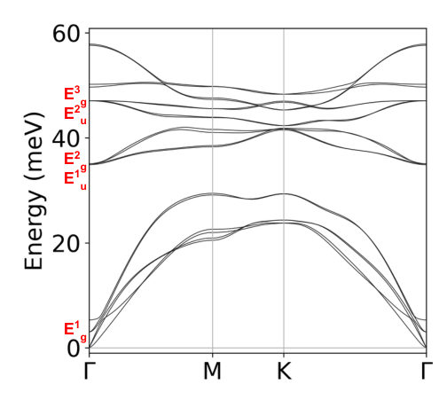
<figcaption class="paper-figure-caption"><b>Fig 1.</b> FIG. 1: Phonon dispersion for 2H-bilayer MoS2, with the 2D symmetry irreps labeled in red. We see that 2H hosts several doubly degenerate irreps at Γ, for which chiral combinations may be formed and the helicity-selective coupling to the PT-induced electron pseudospin may be observed.</figcaption>
</figure>
<figure class="paper-figure-card">
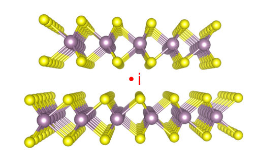
<figcaption class="paper-figure-caption"><b>Fig 2.</b> FIG. 2: Atomic structure of 2H-bilayer MoS2. Notably, the lattice contains an inversion center, an example of which we have denoted with a red point.</figcaption>
</figure>
<figure class="paper-figure-card">
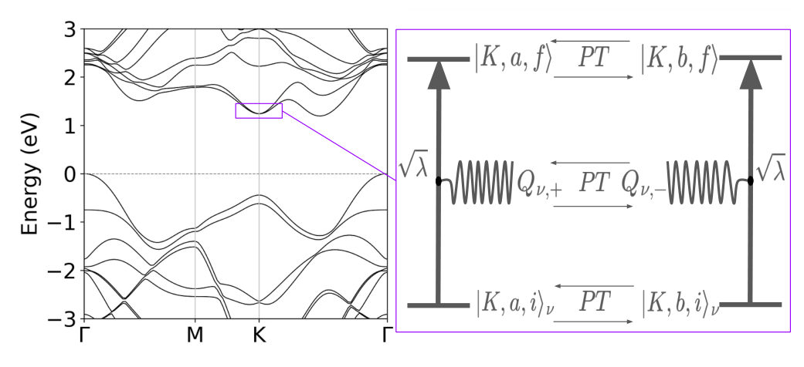
<figcaption class="paper-figure-caption"><b>Fig 3.</b> FIG. 3: (Left) Band structure of 2H-bilayer MoS2, wherein we have highlighted and given a schematic for the chiral PT-based electron-phonon interaction (right). The valence band maximum has been shifted to zero. The selected electron states that couple to the Qν,+ and Qν,−phonons are labeled by a, b respectively and are related by PT within an initial/final doublet. Moreover, chiral selectivity shows that Qν,−, Qν,+ have zero coupling with a, b states, respectively. In 2H bilayer MoS2, the initial conduction band states are dependent on phonon mode, since the initial electron subspace has real C3 eigenvalues and therefore are not constrained by rotational symmetry. The square root of the...</figcaption>
</figure>
<figure class="paper-figure-card">
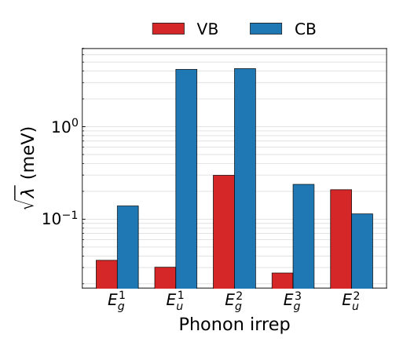
<figcaption class="paper-figure-caption"><b>Fig 4.</b> FIG. 4: Chiral coupling strengths ( √</figcaption>
</figure>
<figure class="paper-figure-card">
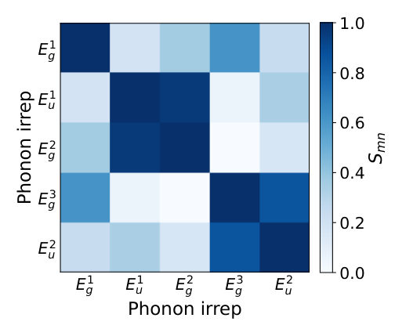
<figcaption class="paper-figure-caption"><b>Fig 5.</b> FIG. 5: Overlap matrix for the transition eigenvector states between phonon modes for the initial CB electronic doublet. The values are noninteger, indicating the phonon mode selectivity of different initial transition eigenvector states in C3-real spaces.</figcaption>
</figure>
</div>

<p><strong>Summary.</strong> This theoretical study analyzes how $C_3$ and $  ext{PT}$ symmetries govern the electron-phonon coupling in $2H$-bilayer $    ext{MoS}_2$. The authors demonstrate that these symmetries enforce strict chiral selection rules on the coupling strength. This mechanism suggests that chiral phonons can be used as a tool to spectroscopically resolve distinct electronic states within the same momentum valley of $   ext{PT}$ materials.</p>
<p><strong>Why it may be interesting.</strong> The explicit use of symmetry constraints ($C_3$ and $  ext{PT}$) to predict highly selective coupling mechanisms (helicity-selectivity) is relevant to understanding open quantum systems where environmental coupling dictates observable dynamics.</p>
<details>
<summary>Detailed structure</summary>
<p><strong>Main problem.</strong> The study investigates how symmetries, specifically Parity-Time (PT) and $C_3$ rotational symmetry, constrain the chiral coupling between phonons and $ ext{PT}$-degenerate electron doublets.</p>
<p><strong>Main result.</strong> Chiral phonons can establish helicity-selective coupling rules, allowing for the resolution of intravalley electronic states within $  ext{PT}$ systems.</p>
<p><strong>Method.</strong> The authors employed theoretical and computational methods, including DFT/DFPT calculations, to analyze the electron-phonon coupling Hamiltonian under symmetry constraints.</p>
<p><strong>Model / system.</strong> The physical system is $2H$-bilayer $    ext{MoS}<em K _Gamma="\Gamma">2$. The model focuses on the electron-phonon coupling ($   ext{EPC}$) Hamiltonian ($ ext{H}'</em>$-partnered electronic states described by a pseudospin.}$) involving $    ext{PT</p>
<p><strong>Key observables.</strong> Chiral phonon coupling strengths ($\sqrt{\lambda}$), $C_3$ eigenvalues ($\chi$), and the overlap matrix $S_{mn}$ are key diagnostics.</p>
<p><strong>Important parameters / regimes.</strong> The analysis is sensitive to the interplay between $    ext{PT}$ symmetry and $C_3$ symmetry, particularly the helicity of the phonons ($ ext{Q}_{\pm}$).</p>
<p><strong>Assumptions / limitations.</strong> The analysis assumes the applicability of symmetry rules derived for $C_3$ to other $PT$ $C_n$ systems and utilizes DFT/DFPT results for coupling strengths.</p>
<p><strong>Figures summary.</strong> Figures illustrate the phonon dispersion, the atomic structure, and schematics detailing the chiral $  ext{PT}$-based $    ext{EPC}$ interaction, showing how coupling strengths vary based on phonon helicity.</p>
<p><strong>Paper structure.</strong> The paper progresses by first establishing the symmetry constraints imposed by $   ext{PT}$ and $C_3$ on the $   ext{EPC}$ Hamiltonian. It then analyzes three distinct cases based on the $C_3$ eigenvalues of the electronic doublets to derive specific chiral selection rules. Finally, it applies these rules to predict the selective coupling mechanism.</p>
</details>
<details>
<summary>Abstract</summary>
<p>Rotational symmetry ($C_n$) constrains chiral phonons, but how other symmetries affect their interactions remains largely unexplored. We perform a theoretical and computational study of chiral phonon coupling to parity-time ($PT$)-degenerate electron doublets in $2H$-bilayer MoS$_2$. Although $PT$ suppresses phonon singlet chirality, chiral phonon doublets can helically interact with $PT$-partner electronic states via a mechanism similar to pseudospin. Selection rules are then analyzed with the interplay of $PT$ and $C_3$. Our computational results of $2H$-bilayer MoS$_2$ suggest chiral phonons may be used to resolve intravalley electronic states in $PT$ systems.</p>
</details>
<p><sub><a href="#top">↑ back to top</a></sub></p>

<p><a id="paper-2610.33309"></a></p>
<h3 id="impact-of-nonlinear-electrodynamics-on-quasinormal-modes-of-rotating-black-strings"><a href="http://arxiv.org/abs/2610.33309v1">Impact of nonlinear electrodynamics on quasinormal modes of rotating black strings</a></h3>
<p><strong>Authors:</strong> F. S. Mirekhtiary, I. Sakalli<br>
<strong>Type:</strong> theory · <strong>Category:</strong> other · <strong>PDF:</strong> <a href="https://arxiv.org/pdf/2610.33309v1">https://arxiv.org/pdf/2610.33309v1</a><br>
<strong>Analysis basis:</strong> full PDF text, analyzed in chunks
<strong>Topic relevance:</strong> <code>analog quantum simulation</code> <strong>1/5</strong> · <code>correlated / nonlocal dissipation</code> <strong>1/5</strong> · <code>driven-dissipative phase transition</code> <strong>1/5</strong> · <code>non-equilibrium universality</code> <strong>1/5</strong> · <code>quantum measurements</code> <strong>1/5</strong> · <code>scars &amp; prethermalization</code> <strong>1/5</strong></p>
<div class="figure-strip-hint">↔ Scroll figures horizontally</div>
<div class="paper-figures-scroll">
<figure class="paper-figure-card">
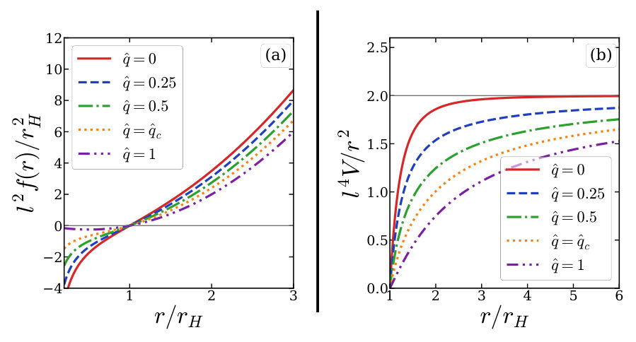
<figcaption class="paper-figure-caption"><b>Fig 1.</b> FIG. 1. (a) Metric function l2f/r2 H of the RBS1 profile, Eq. (6), for reduced charges ˆq = 0, 0.25, 0.5, ˆqc and 1. All curves share the horizon at r = rH, and the mass term disappears at ˆq = 1. (b) Reduced effective potential l4V/r2 of a massless scalar with P = 0. The neutral string reaches the AdS value 2 within a few horizon radii, while the charge term delays the approach, leaving a deficit that decays only as ˆq rH/r.</figcaption>
</figure>
<figure class="paper-figure-card">
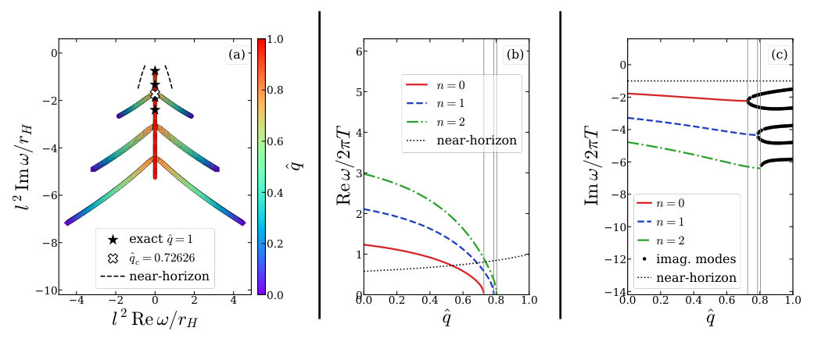
<figcaption class="paper-figure-caption"><b>Fig 2.</b> FIG. 2. Static scalar spectrum of the RBS1 string (s = −1/2, k = 0). (a) Fundamental mode and first two overtones in the complex plane, colored by ˆq. The pairs move toward the imaginary axis and collide there, the fundamental at the exceptional point ˆqc (cross), after which purely imaginary modes run toward the exact values of the ˆq = 1 string (stars). The near-horizon estimate (dashed) is far from every branch. (b) Real part and (c) imaginary part in units of 2πTs. Vertical lines mark the collisions of the three branches.</figcaption>
</figure>
<figure class="paper-figure-card">
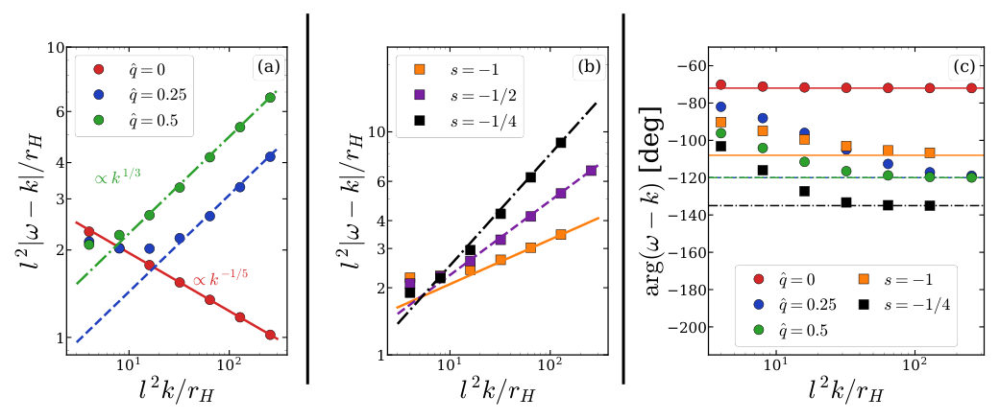
<figcaption class="paper-figure-caption"><b>Fig 3.</b> FIG. 3. Large-momentum behavior of the least damped mode. Symbols are collocation results, lines are the asymptotic law, Eq. (24), with no fitted parameter. (a) RBS1 (s = −1/2): the deviation from the light cone decreases as ˆk−1/5 for the neutral string and grows as ˆk1/3 once ˆq &gt; 0. (b) Charged strings with ˆq = 0.5 for s = −1, −1/2 and −1/4, with slopes 1/5, 1/3 and 1/2. (c) Phase of ω −k approaching −72◦, −120◦, −108◦and −135◦.</figcaption>
</figure>
<figure class="paper-figure-card">
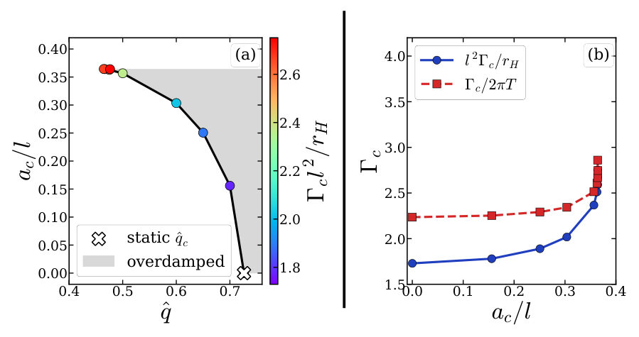
<figcaption class="paper-figure-caption"><b>Fig 4.</b> FIG. 4. Exceptional line of the axisymmetric (m = 0, k = 0) fundamental of the rotating RBS1 string. (a) Rotation ac at which the complex pair meets on the imaginary axis, as a function of the reduced charge, colored by the collision rate Γc. The line ends on the static exceptional point (cross) and folds near ˆq ≃0.465. In the shaded region the pair is purely imaginary; the region above the fold was not mapped. (b) Collision rate along the line in units of rH/l2 and of 2πT = 2πTs/γ.</figcaption>
</figure>
<figure class="paper-figure-card">
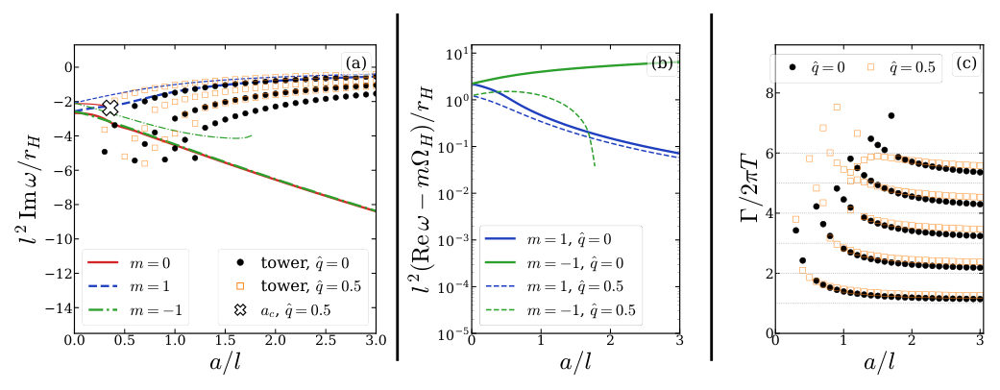
<figcaption class="paper-figure-caption"><b>Fig 5.</b> FIG. 5. Rotating RBS1 string, k = 0; thick lines and filled symbols refer to ˆq = 0, thin lines and open symbols to ˆq = 0.5. (a) Imaginary parts of the complex fundamental modes with m = 0 and m = ±1 and of the lowest purely damped axisymmetric modes, for ˆq = 0 and ˆq = 0.5. The damped tower enters from −i∞and overtakes the complex m = 0 mode at a×. (b) Distance Re ω −mΩH = Re Ω/γ of the m = ±1 modes from the superradiant threshold. It is positive on every tracked branch; the co-rotating modes approach the threshold as ΩHl →1, and the strongly damped counter-rotating mode of the charged string approaches it near a/l ≃1.78. (c) The damped tower in units of 2πT = 2πTs/γ, approaching a...</figcaption>
</figure>
</div>

<p><strong>Summary.</strong> This paper analyzes the quasinormal modes of rotating black strings modified by nonlinear electrodynamics. Using advanced numerical techniques, the authors demonstrate that the charge dictates whether the ringdown is oscillatory or purely damped, and that rotation introduces new spectral features like an exceptional line. The work highlights the necessity of considering boundary effects over simple near-horizon approximations.</p>
<p><strong>Why it may be interesting.</strong> While focused on general relativity, the analysis of damped oscillations (QNMs) and the study of exceptional points in parameter space are mathematically analogous to open quantum systems and quantum decay processes.</p>
<details>
<summary>Detailed structure</summary>
<p><strong>Main problem.</strong> The study investigates how nonlinear electrodynamics (NLED) modifies the quasinormal modes (QNMs) of rotating black strings in an anti-de Sitter (AdS) background.</p>
<p><strong>Main result.</strong> The charge significantly alters the ringdown behavior, causing overdamping at specific charge values, and the spectrum is governed by complex interplay between the horizon and near-boundary effects.</p>
<p><strong>Method.</strong> The authors employed three independent numerical techniques—Horowitz-Hubeny series, Chebyshev collocation, and time-domain evolution—to solve the radial wave equation.</p>
<p><strong>Model / system.</strong> The system is a rotating black string sourced by a power-Maxwell field, described by a metric function $f(r)$ derived from Einstein gravity coupled to NLED. Perturbations are analyzed via a scalar test field $\Psi$.</p>
<p><strong>Key observables.</strong> Quasinormal mode frequencies ($\omega_n$), the exceptional point ($\hat{q}_c$), and the large transverse momentum law exponent.</p>
<p><strong>Important parameters / regimes.</strong> The NLED charge ($\hat{q}$), the rotation parameter ($a/l$), and the negative exponent ($s$) of the power-Maxwell field.</p>
<p><strong>Assumptions / limitations.</strong> The rotating spectrum is assumed to follow exactly from the static one via a frequency-dependent momentum boost map, and the analysis confirms that simple near-horizon estimates are insufficient.</p>
<p><strong>Figures summary.</strong> Figures illustrate the static scalar spectrum showing mode movement toward the imaginary axis and collision at $\hat{q}_c$, and time-domain profiles comparing oscillatory ringdown at low charge versus purely damped tails at high charge.</p>
<p><strong>Paper structure.</strong> The paper establishes the governing radial equation, relates the rotating spectrum to the static one via a boost map, calculates the spectrum using multiple numerical methods, and analyzes asymptotic behavior and the impact of charge and rotation.</p>
</details>
<details>
<summary>Abstract</summary>
<p>We study massless scalar perturbations of rotating anti-de Sitter black strings sourced by a power-Maxwell field with negative exponent $s$. The charge enters the metric function as $-Qr^{p}$ with $p=2/(1-2s)$, and the case $s=-1/2$ gives a linear term with an algebraic horizon. Since rotation is a local boost of the static string, the rotating spectrum follows exactly from the static one evaluated at a frequency-dependent momentum. We compute the spectrum with the Horowitz-Hubeny series, Chebyshev collocation and time-domain evolution, each implemented in two independent codes and checked against the planar Schwarzschild-AdS limit. The charge acts in two ways. At the reduced charge $\hat q_c=0.72626$ the least damped pair of modes meets on the imaginary axis, so more strongly charged strings ring down without oscillation, and at the endpoint of the branch the spectrum is exactly hypergeometric. At large transverse momentum the distance of the modes from the light cone grows as $k^{1/(1-4s)}$, replacing the $k^{-1/5}$ law of the neutral brane. Rotation continues the exceptional point into a line in the plane of charge and rotation, adds a purely damped axisymmetric tower, and never produces superradiant growth. A near-horizon estimate used earlier for this geometry misses all of these effects.</p>
</details>
<p><sub><a href="#top">↑ back to top</a></sub></p>

<p><a id="paper-2610.34112"></a></p>
<h3 id="jensen-mercer-two-sided-bounds-for-entropy-production-rate"><a href="http://arxiv.org/abs/2610.34112v1">Jensen-Mercer two-sided bounds for entropy production rate</a></h3>
<p><strong>Authors:</strong> Xiao-Kan Guo, Zhiqiang Huang<br>
<strong>Type:</strong> theory · <strong>Category:</strong> statistical mechanics · <strong>PDF:</strong> <a href="https://arxiv.org/pdf/2610.34112v1">https://arxiv.org/pdf/2610.34112v1</a><br>
<strong>Analysis basis:</strong> full PDF text, analyzed in chunks
<strong>Topic relevance:</strong> <code>Keldysh / 2PI / non-Gaussian methods</code> <strong>1/5</strong> · <code>correlated / nonlocal dissipation</code> <strong>1/5</strong> · <code>driven-dissipative phase transition</code> <strong>1/5</strong> · <code>methods for driven-dissipative</code> <strong>1/5</strong> · <code>non-equilibrium universality</code> <strong>1/5</strong> · <code>quantum measurements</code> <strong>1/5</strong></p>
<div class="figure-strip-hint">↔ Scroll figures horizontally</div>
<div class="paper-figures-scroll">
<figure class="paper-figure-card">
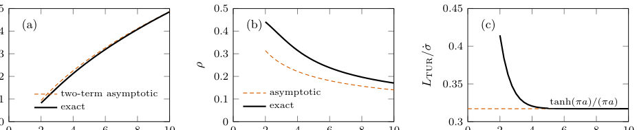
<figcaption class="paper-figure-caption"><b>Fig 1.</b> FIG. 1. Strong-barrier regime at 𝑎= 1, from the exact solution. (a) Relative gap of the Bhatia–Davis ceiling, Eq. (51). It grows as √𝑔, shown dashed for the two-term asymptotic. (b) Tightness ratio 𝜌of Eq. (46). It decays as 𝑔−1/2, shown dashed for the leading asymptotic √</figcaption>
</figure>
<figure class="paper-figure-card">
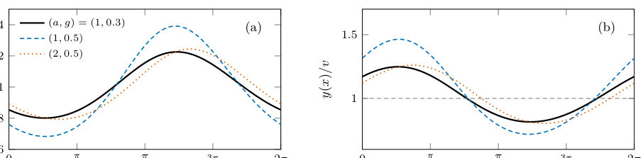
<figcaption class="paper-figure-caption"><b>Fig 2.</b> FIG. 2. Stationary state of the tilted periodic (Brownian-motor) model for the three parameter sets of Table I, from the exact Fokker–Planck solution. (a) Stationary density 𝑝(𝑥), scaled as 2𝜋𝑝(flat-tilt value unity), maximal at the well bottom 𝑥= 𝜋and minimal near the barrier top 𝑥= 0. (b) Local current velocity 𝑦(𝑥) = 𝐽/𝑝(𝑥) in units of its mean 𝑣= ⟨𝑦⟩(dashed line), whose spread about unity is the fluctuation exploited by the ceiling of Eq. (8) and whose extrema are 𝛼/𝑣and 𝛽/𝑣.</figcaption>
</figure>
<figure class="paper-figure-card">
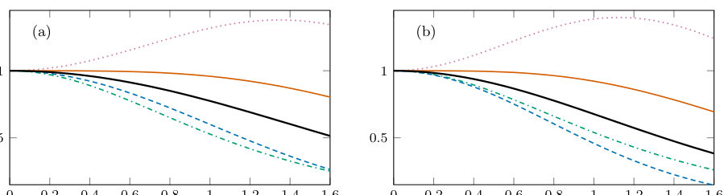
<figcaption class="paper-figure-caption"><b>Fig 3.</b> FIG. 3. Bounds on ̇𝜎as functions of the barrier height 𝑔= 𝛽𝑉0 at fixed tilt, in units of 𝐷𝛽2𝐹2. Shown are the exact rate (black), the Jensen floor (blue dashed), the Bhatia–Davis ceiling (red), the Mercer bound (purple dotted), and the TUR floor (green dash-dotted), all evaluated from the exact Fokker–Planck solution. (a) 𝑎= 1, where 𝑐2 &gt; 0 and hence 𝐷eff &gt; 𝐷, so the TUR floor lies below the Jensen floor. (b) 𝑎= 0.5 &lt; 1/√3, where 𝑐2 &lt; 0 and the ordering of the two floors is reversed [Eq. (F33)]. In both panels the exact rate stays inside the two-sided sandwich of Eq. (11), and the Mercer bound lies above the ceiling by Varmax(𝑦)/𝐷.</figcaption>
</figure>
</div>

<p><strong>Summary.</strong> This work provides a comprehensive theoretical framework for bounding the entropy production rate in non-equilibrium stochastic systems. By deriving a two-sided sandwich bound using advanced inequalities like Jensen's and Mercer's, the authors constrain dissipation using only mean measurements and current extrema. This has broad implications for understanding fundamental thermodynamic limits in driven matter.</p>
<p><strong>Why it may be interesting.</strong> The rigorous mathematical bounding of non-equilibrium quantities like entropy production is crucial for understanding the fundamental limits of energy dissipation in complex physical systems, which has parallels in open quantum system dynamics.</p>
<details>
<summary>Detailed structure</summary>
<p><strong>Main problem.</strong> The paper focuses on establishing and comparing optimal mathematical bounds (ceilings and floors) for the entropy production rate ($\dot{\sigma}$) in non-equilibrium stochastic systems.</p>
<p><strong>Main result.</strong> The authors derive a two-sided sandwich bound for $\dot{\sigma}$ using Jensen's inequality (lower bound) and a sharp upper bound derived from Mercer's reflection inequality, which is controlled by the mean drift and the extrema of the local current.</p>
<p><strong>Method.</strong> The methodology combines advanced mathematical inequalities (Jensen, Mercer, Bhatia-Davis) with the analysis of the Fokker-Planck equation to constrain thermodynamic quantities.</p>
<p><strong>Model / system.</strong> The analysis is applied to overdamped Langevin dynamics, general diffusion processes, and extended to underdamped dynamics and systems with position-dependent diffusion, including the washboard potential.</p>
<p><strong>Key observables.</strong> Entropy production rate ($\dot{\sigma}$), mean coordinate rates ($\langle y_i 
angle$), local probability-current velocity ($y_i$), and the local current extrema ($\alpha_i, eta_i$).</p>
<p><strong>Important parameters / regimes.</strong> The analysis distinguishes between different regimes, such as the strong-barrier limit and the comparison between the fluctuation floor (TUR) and the Jensen floor.</p>
<p><strong>Assumptions / limitations.</strong> The derivation relies on the system being governed by a Fokker-Planck equation and involves approximations in certain physical regimes (e.g., strong-barrier limit).</p>
<p><strong>Paper structure.</strong> The paper systematically develops the bounds, starting with the general quadratic functional, deriving the Jensen lower bound, establishing the sharp upper bound via Bhatia-Davis/Mercer's inequality, and then extending the framework to complex systems like underdamped dynamics and position-dependent diffusion.</p>
</details>
<details>
<summary>Abstract</summary>
<p>Bounds on entropy production convert limited observations into constraints on hidden dissipation. The Jensen bound expresses a lower bound on the total and subsystem entropy production rates of continuous stochastic systems in terms of mean coordinate rates alone. We show that the same convexity structure yields a complementary upper bound, inspired by Mercer's reflection inequality. For the quadratic entropy-production functional of overdamped Langevin dynamics, Mercer's reflection inequality is identical to the sharp Bhatia-Davis variance bound and coincides with the convex dual of the smallest affine majorant of the functional over the range of the local current. The two bounds yield a two-sided sandwich controlled solely by the mean drift and the extrema of the current, organized into a hierarchy of optimal bounds in which each further observation tightens the ceiling. The thermodynamic uncertainty relation supplies an independent fluctuation floor. We also treat position-dependent diffusion, underdamped dynamics and the tilted periodic potential, for which the weak-barrier series is obtained in closed form and the strong-barrier regime is solved asymptotically. We check the bounds numerically on the Brownian motor.</p>
</details>
<p><sub><a href="#top">↑ back to top</a></sub></p>

<p><a id="paper-2610.33193"></a></p>
<h3 id="the-thermodynamic-complexity-of-circuits"><a href="http://arxiv.org/abs/2610.33193v1">The Thermodynamic Complexity of Circuits</a></h3>
<p><strong>Authors:</strong> Anne Condon, David Doty, Niels Kornerup, David Soloveichik, David Wolpert<br>
<strong>Type:</strong> theory · <strong>Category:</strong> statistical mechanics · <strong>PDF:</strong> <a href="https://arxiv.org/pdf/2610.33193v1">https://arxiv.org/pdf/2610.33193v1</a><br>
<strong>Analysis basis:</strong> full PDF text, analyzed in chunks
<strong>Topic relevance:</strong> <code>Keldysh / 2PI / non-Gaussian methods</code> <strong>1/5</strong> · <code>correlated / nonlocal dissipation</code> <strong>1/5</strong> · <code>driven-dissipative phase transition</code> <strong>1/5</strong> · <code>methods for driven-dissipative</code> <strong>1/5</strong> · <code>non-equilibrium universality</code> <strong>1/5</strong> · <code>quantum measurements</code> <strong>1/5</strong></p>
<div class="figure-strip-hint">↔ Scroll figures horizontally</div>
<div class="paper-figures-scroll">
<figure class="paper-figure-card">
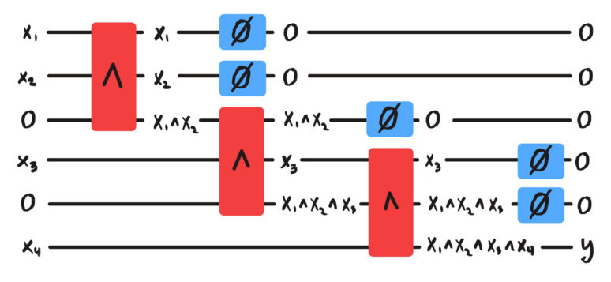
<figcaption class="paper-figure-caption"><b>Fig 1.</b> Figure 1: An example of a circuit that cleanly computes y = x1 ∧x2 ∧x3 ∧x4 up to permutation of the wire indices. Here the red ∧gates perform the mapping (a, b, c) →(a, b, a ∧b) and the blue ∅erasure gates perform the mapping a →0. Each gate overwrites its inputs (values on wires to the left of the gate) with its outputs (values on wires to the right of the gate).</figcaption>
</figure>
<figure class="paper-figure-card">
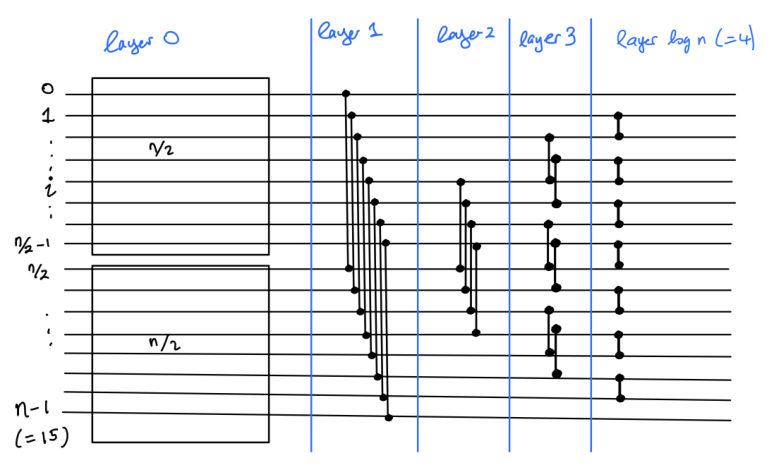
<figcaption class="paper-figure-caption"><b>Fig 2.</b> Figure 2: Recursive case of Batcher’s odd-even mergesort network for 16 inputs. The base case is n = 4 is shown in Figure 3.</figcaption>
</figure>
<figure class="paper-figure-card">
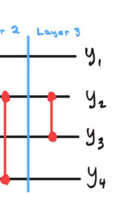
<figcaption class="paper-figure-caption"><b>Fig 3.</b> Figure 3: The n = 4 base case of Batcher’s odd-even mergesort.</figcaption>
</figure>
<figure class="paper-figure-card">
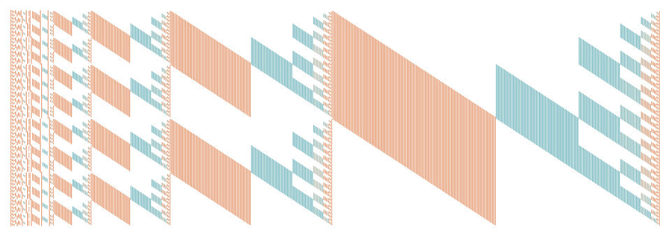
<figcaption class="paper-figure-caption"><b>Fig 4.</b> Figure 4: A plot of empirically calculated expected released heat per gate for sorting randomly permuted integers 0, . . . , n −1. The algorithm in Lemma 4.8 is used to find approximate heat functions for each gate and then a fresh source of randomness is used to compute the empirical expected heat release. Teal indicates low heat release and orange high heat release. While it appears that there are many orange gates at the beginning of each recursive step, in the later layers this number is only O(n). Thus we use the centrally located orange gates in the later layers of each recursive step to obtain our bound.</figcaption>
</figure>
<figure class="paper-figure-card">

<figcaption class="paper-figure-caption"><b>Fig 5.</b> Figure 5: The subcircuit for erasing bit b3 when b = 1011, so z3 = |b≤3|1 = 2 and the gate must assume Pr[b3 = 1] = 2/3. Reversible demultiplexer drawn without extra clean input wires needed to supply 0’s to unaddressed output wires, and similarly for unshown output wires of multiplexer that simply pass through unaddressed inputs.</figcaption>
</figure>
</div>

<p><strong>Summary.</strong> This paper develops a thermodynamic model for computing circuits to quantify the 'entropy production' cost associated with irreversible operations. It derives computational complexity results for minimizing this cost and establishes energy-depth trade-offs for sorting networks. The work advances the understanding of fundamental physical limits on computation beyond classical Landauer bounds.</p>
<p><strong>Why it may be interesting.</strong> It provides a rigorous, non-equilibrium thermodynamic measure ($ ext{EP}$) for computational cost, which can be adapted to analyze energy dissipation in open quantum systems or computation models that involve irreversible measurements or dissipation.</p>
<details>
<summary>Detailed structure</summary>
<p><strong>Main problem.</strong> The paper investigates the thermodynamic complexity of computational circuits, quantifying the energetic cost (entropy production) associated with logically irreversible computation steps beyond the Landauer limit.</p>
<p><strong>Main result.</strong> They derive tight bounds on entropy production for specific circuit families (e.g., $\Omega(n)$ for AND trees, $O(n)$ for mergesort), and show that zero entropy production is achievable for sorting under certain conditions.</p>
<p><strong>Method.</strong> The analysis uses a thermodynamic model of circuits based on 'heat functions' and the formalism of stochastic thermodynamics to quantify entropy production ($  ext{EP}$).</p>
<p><strong>Model / system.</strong> The model is a general circuit structure analyzed using heat functions, extending concepts from Landauer's principle into the framework of stochastic thermodynamics.</p>
<p><strong>Key observables.</strong> Entropy production ($  ext{EP}$), excess heat released over the Landauer limit, and the heat functions associated with gates.</p>
<p><strong>Important parameters / regimes.</strong> Circuit depth, number of bits ($n$), and the input probability distribution (e.g., uniform, exchangeable).</p>
<p><strong>Assumptions / limitations.</strong> The model assumes circuits compute cleanly (erasing inputs/intermediates) and utilizes concepts from stochastic thermodynamics, which is inherently distributional.</p>
<p><strong>Figures summary.</strong> Not specified, but the notes mention Figure 2 showing the partitioning of gates in layer $l=3$ for $n=16$.</p>
<p><strong>Paper structure.</strong> The paper builds from the general framework of stochastic thermodynamics to analyze specific circuit families, deriving computational complexity results (PP-completeness) and then providing tight energy-depth trade-offs for sorting networks.</p>
</details>
<details>
<summary>Abstract</summary>
<p>When any physical system executes a logically irreversible (non-injective) step of a computation, the excess heat released over the Landauer limit is an energetic cost that cannot be recovered. In modern computers this cost vastly dwarfs the Landauer cost. Modern stochastic thermodynamics refers to this cost as the ``entropy production'' and has derived fundamental lower bounds on its value. Here we introduce a thermodynamic model of circuits using heat functions and investigate its entropy production, deriving new results on the thermodynamic complexity of circuits.   We first show that computing the optimal heat functions for gates in a given circuit (minimizing the entropy production) is PP-complete and multiplicative approximation of those heat functions is NP-hard, but additive approximation admits a polynomial-time randomized algorithm. We give tight bounds for entropy production for certain specific families of circuits (on uniformly distributed inputs): an $n$-ary AND tree of depth $O(\log n)$ requires $Ω(n)$ entropy production, while a serial chain achieves $O(1)$ in an idealized model, showing an energy-depth tradeoff. The Batcher odd-even mergesort network on $n$ bits has $Θ(n)$ entropy production, asymptotically less than its $Θ(n \log^2 n)$ gate count. On random permutations of distinct integers its entropy production is $Θ(n \log^2 n)$, asymptotically exceeding the Landauer cost of sorting; but preceding it with Leighton and Plaxton's almost-sorting network reduces the total heat released to $O(n \log n)$. Finally, we show how to sort $n$ values with zero circuit entropy production over any exchangeable input distribution. Our framework also yields streamlined proofs of known results in stochastic thermodynamics on mismatch cost and modularity cost.</p>
</details>
<p><sub><a href="#top">↑ back to top</a></sub></p>

<p><a id="paper-2610.33545"></a></p>
<h3 id="when-is-a-bosonic-operator-a-hamiltonian"><a href="http://arxiv.org/abs/2610.33545v1">When is a bosonic operator a Hamiltonian?</a></h3>
<p><strong>Authors:</strong> Felix Fischer, Hermann Schulz-Baldes, Daniel Burgarth, Davide Lonigro<br>
<strong>Type:</strong> theory · <strong>Category:</strong> other · <strong>PDF:</strong> <a href="https://arxiv.org/pdf/2610.33545v1">https://arxiv.org/pdf/2610.33545v1</a><br>
<strong>Analysis basis:</strong> full PDF text, analyzed in chunks
<strong>Topic relevance:</strong> <code>Keldysh / 2PI / non-Gaussian methods</code> <strong>1/5</strong> · <code>analog quantum simulation</code> <strong>1/5</strong> · <code>correlated / nonlocal dissipation</code> <strong>1/5</strong> · <code>driven-dissipative phase transition</code> <strong>1/5</strong> · <code>methods for driven-dissipative</code> <strong>1/5</strong> · <code>quantum measurements</code> <strong>1/5</strong></p>
<div class="figure-strip-hint">↔ Scroll figures horizontally</div>
<div class="paper-figures-scroll">
<figure class="paper-figure-card">

<figcaption class="paper-figure-caption"><b>Fig 1.</b> Figure 1. The three possible physical realizations of a Her- mitian operator H, classified by its deficiency indices n±. If exactly one unitary evolution is compatible with H, the op- erator alone fixes the physics. If several are, further physical input is needed to single one out, and different choices de- scribe genuinely different systems. If none is, H is not the Hamiltonian of any physical system.</figcaption>
</figure>
<figure class="paper-figure-card">

<figcaption class="paper-figure-caption"><b>Fig 2.</b> Figure 2. The algorithm at work on the operator x2p + xpx + px2 of [35, 36]. Eigenvalues ρ1 n ≥ρ2 n ≥ρ3 n of the radius matrices R+ n against n: two of the three decay to zero while one remains finite, giving n+ = 1. Equivalently (inset), the Weyl disks B+ n determined by R+ n —shown for n = 4, 10, 40, 200—are nested one inside the next and collapse from three dimensions onto a one-dimensional segment, whose dimension is n+. The operator therefore admits a whole family of distinct unitary evolutions rather than a single one. The same results are obtained for n−. Counting the surviving eigenvalues is the only numerical step in the algorithm.</figcaption>
</figure>
<figure class="paper-figure-card">

<figcaption class="paper-figure-caption"><b>Fig 3.</b> Figure 3. Deficiency indices n± of the operator (a†)4 + a4 + η1((a†)3a + a†a3) + η2(a†)2a2 from [38], obtained by applying the algorithm at each point of the (η1, η2) plane. Three regimes with sharp boundaries appear: n± = 0, where the operator alone fixes a unique dynamics; n± = 2 and n± = 4, where physical input is needed to select one of a family of inequivalent evolutions. A sweep of this kind takes a single run of the algorithm per point and requires no analytical input.</figcaption>
</figure>
<figure class="paper-figure-card">

<figcaption class="paper-figure-caption"><b>Fig 4.</b> Figure 4. Eigenvalues of the radius matrices R± n associated with the operator (a†)3 + a3, against n.</figcaption>
</figure>
<figure class="paper-figure-card">

<figcaption class="paper-figure-caption"><b>Fig 5.</b> Figure 5. Eigenvalues of the radius operators R+ n associated with the operator A3,η = η((a†)3 + a3) for η = 10−2 (left) and for the automatically rescaled version (η = 1, right).</figcaption>
</figure>
</div>

<p><strong>Summary.</strong> This paper introduces an algorithm to determine if a bosonic polynomial operator is a valid Hamiltonian by calculating its deficiency indices. By analyzing the limiting behavior of associated matrices, the method classifies operators as having unique dynamics, requiring extra physical input, or having no unitary evolution. This is a significant theoretical tool for continuous-variable quantum information.</p>
<p><strong>Why it may be interesting.</strong> This work provides a powerful, systematic computational tool to diagnose pathologies in Hamiltonians used in continuous-variable quantum computing, which is crucial for building reliable quantum circuits.</p>
<details>
<summary>Detailed structure</summary>
<p><strong>Main problem.</strong> The paper addresses the fundamental question of determining when a bosonic operator, expressed as a polynomial in quadrature operators, qualifies as a physical Hamiltonian that generates a unique unitary quantum dynamics.</p>
<p><strong>Main result.</strong> The authors developed an algorithm based on deficiency indices ($n_+, n_-$) that systematically classifies operators, revealing that non-Gaussian operators often lead to non-unique or non-existent dynamics.</p>
<p><strong>Method.</strong> The core method is an algorithm that computes the deficiency indices by analyzing the limiting behavior of radius matrices derived from the operator's structure, avoiding direct functional-analytic input.</p>
<p><strong>Model / system.</strong> The study focuses on single-mode bosonic operators, represented as normal-ordered polynomials $p_M$ in creation and annihilation operators ($a, a^\dagger$), relevant to continuous-variable quantum information.</p>
<p><strong>Key observables.</strong> Deficiency indices ($n_+, n_-$), which determine the number of independent boundary conditions required for a unique evolution; radius eigenvalues ($
ho_j^n$).</p>
<p><strong>Important parameters / regimes.</strong> The polynomial coefficients ($M_{k,l}$), the degree of the polynomial, and the asymptotic limit ($n 	o \infty$) used in the analysis.</p>
<p><strong>Assumptions / limitations.</strong> The analysis relies on the mathematical equivalence between a unique unitary evolution and the operator being essentially self-adjoint, and the method is currently limited to single-mode operators.</p>
<p><strong>Figures summary.</strong> Figures illustrate the calculation of deficiency indices for specific operators (e.g., $A_3$), showing the convergence of associated disks or radii, and comparing results across different scaling factors.</p>
<p><strong>Paper structure.</strong> The paper introduces the problem, develops the deficiency index algorithm using matrix theory, applies it to various literature examples (Table I), and discusses the limitations of the diagnostic criteria (e.g., the Raabe criterion).</p>
</details>
<details>
<summary>Abstract</summary>
<p>Hermitian polynomials in the quadrature operators $x$ and $p$ are the basic ingredients of continuous-variable quantum information, and increasingly exotic ones are now routinely engineered in superconducting circuits and trapped ions. However, such a polynomial need not define unique quantum dynamics: it may define exactly one, none, or an infinite family of physically distinct ones. Such obstructions are invisible to algebraic arguments and can compromise finite-dimensional truncations, which may fail to converge or silently converge to the wrong dynamics. We develop a method, implemented as an algorithm, which decides which case occurs, and how large the family is, from the coefficients alone, with no functional-analytic input from the user. For Gaussian operators the answer is always one; for non-Gaussian ones, a regime continuous-variable quantum computing cannot do without, the other outcomes occur already for simple and physically natural Hamiltonians. We apply the algorithm to operators drawn from the recent literature.</p>
</details>
<p><sub><a href="#top">↑ back to top</a></sub></p>

<p><a id="paper-2610.33848"></a></p>
<h3 id="helstrom-geometry-with-time-dependent-spectral-calibration"><a href="http://arxiv.org/abs/2610.33848v1">Helstrom geometry with time-dependent spectral calibration</a></h3>
<p><strong>Authors:</strong> Kaushlendra Kumar<br>
<strong>Type:</strong> theory · <strong>Category:</strong> quantum information and computing · <strong>PDF:</strong> <a href="https://arxiv.org/pdf/2610.33848v1">https://arxiv.org/pdf/2610.33848v1</a><br>
<strong>Analysis basis:</strong> full PDF text, analyzed in chunks
<strong>Topic relevance:</strong> <code>Keldysh / 2PI / non-Gaussian methods</code> <strong>1/5</strong> · <code>driven-dissipative phase transition</code> <strong>1/5</strong> · <code>methods for driven-dissipative</code> <strong>1/5</strong> · <code>non-equilibrium universality</code> <strong>1/5</strong> · <code>quantum measurements</code> <strong>1/5</strong></p>
<div class="figure-strip-hint">↔ Scroll figures horizontally</div>
<div class="paper-figures-scroll">
<figure class="paper-figure-card">

<figcaption class="paper-figure-caption"><b>Fig 1.</b> Figure 1. Illustration of scalar-anchored calibration geom- etry, adapted from [9]. The scalar states ωL and ωR lie at distances ℓL = µ−1 L and ℓR = µ−1 R from every qubit state, with dD(ωL, ωR)2 = ℓ2 L + ℓ2 R. Inside the qubit block the spectral distance is the calibrated chord dD(ωρ(r), ωρ(s)) = Λ−1|r −s|.</figcaption>
</figure>
<figure class="paper-figure-card">

<figcaption class="paper-figure-caption"><b>Fig 2.</b> Figure 2. Illustration of the effects of moving Dirac links. (a) Normalized spectral and trace distances under depolarization, with the interval of spectral growth shown in the shaded region. (b) Scalar radii and scalar–scalar distance for an oscillating link imbalance at fixed Λ.</figcaption>
</figure>
</div>

<p><strong>Summary.</strong> This work investigates the geometric relationship between the trace distance and the Connes spectral distance for evolving quantum states. By modeling the system using a spectral triple with time-dependent links, the authors show that the spectral record does not uniquely determine the trace distance history. This has implications for understanding quantum information flow and distinguishing between different physical processes.</p>
<p><strong>Why it may be interesting.</strong> It provides a rigorous geometric framework for understanding how different mathematical measures of quantum distinguishability relate under time evolution, which is crucial for characterizing open quantum systems.</p>
<details>
<summary>Detailed structure</summary>
<p><strong>Main problem.</strong> The paper analyzes the relationship between two measures of quantum distinguishability—the trace distance (Helstrom distance) and the Connes spectral distance—when the underlying spectral calibration factor is time-dependent.</p>
<p><strong>Main result.</strong> It demonstrates that the spectral distance growth can occur even when the trace distance contracts, showing that the spectral record alone is insufficient to determine the true history of quantum state distinguishability.</p>
<p><strong>Method.</strong> The authors utilize a finite spectral triple structure to model qubit evolution, deriving relationships between the time derivatives of the spectral distance, trace distance, and the time-dependent calibration factor $\Lambda(t)$.</p>
<p><strong>Model / system.</strong> The model involves qubit states evolving under time-dependent quantum channels, geometrically embedded within a spectral triple structure containing a qubit block and two scalar blocks connected by time-dependent links.</p>
<p><strong>Key observables.</strong> Trace distance $T(t)$, Connes spectral distance $d(t)$, and the calibration factor $\Lambda(t)$.</p>
<p><strong>Important parameters / regimes.</strong> Link strengths ($\mu_L, \mu_R$), the imbalance parameter $eta$, and the decay rate $\gamma$ (in depolarizing examples).</p>
<p><strong>Assumptions / limitations.</strong> The analysis relies on the spectral triple formalism and assumes the validity of the derived relationships between the three distinguishability measures.</p>
<p><strong>Figures summary.</strong> Figure 1 illustrates the geometry relating the spectral distance to the Bloch-ball trace metric. Figure 2 illustrates the evolution, showing spectral distance peaking while trace distance decreases under depolarization, and also shows the scalar-scalar distance for an oscillating link imbalance.</p>
<p><strong>Paper structure.</strong> The paper first establishes the relationship between the spectral and trace distances using the spectral triple. It then analyzes the time evolution by separating the distinguishability and calibration contributions. Finally, it explores the ambiguity by showing that different physical histories can yield the same spectral record, which can be resolved by analyzing the scalar radii.</p>
</details>
<details>
<summary>Abstract</summary>
<p>In a recent work we introduced a finite scalar-qubit-scalar spectral triple whose Connes distance reproduces the Bloch-ball trace metric up to a factor $2/Λ$, where $Λ^2=μ_L^2+μ_R^2$ for isotropic link strengths $μ_L,μ_R$ appearing in the proposed Dirac operator. Here we analyse time-dependent variation of these links, independent of the qubit dynamics. In doing so, we separate the distinguishability and calibration contributions to the spectral rate. A depolarizing example demonstrates spectral growth despite a monotonic contraction of the trace-distance. More generally, we characterize the admissible trace-distance histories compatible with a given positive spectral record and exhibit contracting and reviving realizations. At fixed $Λ$, we also study a sinusoidal link imbalance that preserves the Dirac spectrum and qubit metric, while the scalar-scalar distance oscillates with half the period of the imbalance.</p>
</details>
<p><sub><a href="#top">↑ back to top</a></sub></p>

<p><a id="paper-2610.35436"></a></p>
<h3 id="precursor-ratio-controlled-chloride-vacancies-in-lead-free-kcucl3-x-memristors-for-forming-free-gradual-resistive-switching-and-neuromorphic-learning"><a href="http://arxiv.org/abs/2610.35436v1">Precursor Ratio-Controlled Chloride Vacancies in Lead-Free KCuCl3-x Memristors for Forming-Free Gradual Resistive Switching and Neuromorphic Learning</a></h3>
<p><strong>Authors:</strong> Chinmayee Mandar Mhaskar, Sangeeta Roy Chaudhuri, Ayan Roy Chaudhuri<br>
<strong>Type:</strong> both · <strong>Category:</strong> disordered systems and neural networks · <strong>PDF:</strong> <a href="https://arxiv.org/pdf/2610.35436v1">https://arxiv.org/pdf/2610.35436v1</a><br>
<strong>Analysis basis:</strong> full PDF text, analyzed in chunks
<strong>Topic relevance:</strong> <code>analog quantum simulation</code> <strong>1/5</strong> · <code>driven-dissipative phase transition</code> <strong>1/5</strong> · <code>non-equilibrium universality</code> <strong>1/5</strong> · <code>quantum measurements</code> <strong>1/5</strong> · <code>scars &amp; prethermalization</code> <strong>1/5</strong></p>
<div class="figure-strip-hint">↔ Scroll figures horizontally</div>
<div class="paper-figures-scroll">
<figure class="paper-figure-card">

<figcaption class="paper-figure-caption"><b>Fig 1.</b> Figure 1. (a) XRD patterns of KCuCl3-x thin films compared with KCuCl3 and CuCl2 PDF</figcaption>
</figure>
<figure class="paper-figure-card">

<figcaption class="paper-figure-caption"><b>Fig 2.</b> Figure 2. High-resolution XPS elemental scan for (a) K 2p, (b) Cu 2p, (c) Cl 2p regions across</figcaption>
</figure>
<figure class="paper-figure-card">

<figcaption class="paper-figure-caption"><b>Fig 3.</b> Figure 2 (a-c) presents the high-resolution XPS spectra of the K 2p, Cu 2p, and Cl 2p</figcaption>
</figure>
<figure class="paper-figure-card">

<figcaption class="paper-figure-caption"><b>Fig 4.</b> Figure 3. EPR spectra of the prepared samples showing variations in (a) signal intensity and</figcaption>
</figure>
<figure class="paper-figure-card">

<figcaption class="paper-figure-caption"><b>Fig 5.</b> Figure 4. (a) Tauc plots depicting extrapolation of absorption data to determine the bandgap</figcaption>
</figure>
</div>

<p><strong>Summary.</strong> This work demonstrates that by precisely controlling chloride vacancy concentration in lead-free $ ext{KCuCl}_{3-x}$ memristors using precursor chemistry, researchers can engineer the material's electronic structure and ionic transport. This control leads to superior, forming-free resistive switching, which is successfully mapped onto high-performance artificial neural network simulations.</p>
<p><strong>Why it may be interesting.</strong> While the focus is on solid-state electronics, the explicit link between controlled structural disorder (vacancies) and the emergent computational behavior (synaptic weight modulation) touches upon concepts relevant to disordered quantum systems and glassy dynamics.</p>
<details>
<summary>Detailed structure</summary>
<p><strong>Main problem.</strong> The goal is to develop a systematic method to optimize ionic transport, analog resistive switching, and overall neuromorphic learning performance simultaneously in lead-free halide perovskite memristors.</p>
<p><strong>Main result.</strong> Controlling the chloride vacancy concentration ($  ext{VCl}$) via precursor ratio engineering provides an optimal balance, leading to forming-free gradual switching and achieving high recognition accuracies (e.g., 98.96% on MNIST).</p>
<p><strong>Method.</strong> The study combines wet chemical synthesis (varying precursor ratios) with comprehensive characterization techniques (XPS, XRD, UV-Vis) and electrical testing, culminating in artificial neural network simulations.</p>
<p><strong>Model / system.</strong> The physical system is a lead-free, all-inorganic $ ext{KCuCl}_{3-x}$ thin film used as a memristor. The mechanism relies on vacancy-mediated resistive switching, where the concentration of chloride vacancies ($ ext{VCl}$) is tuned by controlling the $    ext{KCl}:   ext{CuCl}_2$ precursor ratio.</p>
<p><strong>Key observables.</strong> Chloride vacancy concentration ($  ext{VCl}$), electronic band gap ($ ext{E}_{    ext{g}}$), electronic disorder (Urbach energy), bipolar switching characteristics, and ANN recognition accuracy (MNIST/Fashion-MNIST).</p>
<p><strong>Important parameters / regimes.</strong> Optimal $   ext{VCl}$ concentration ($\sim 1.3 	imes 10^{21} 	ext{ cm}^{-3}$), precursor molar ratio ($ ext{KCl}:   ext{CuCl}_2$), and cycle count (endurance).</p>
<p><strong>Assumptions / limitations.</strong> The primary assumption is that precursor-ratio control offers a simple and effective means to precisely regulate the concentration of mobile ionic defects ($    ext{VCl}$) within the perovskite lattice.</p>
<p><strong>Figures summary.</strong> Figures likely show XRD patterns confirming structural stability across samples, XPS spectra detailing changes in elemental occupancy and bonding environments, and electrical I-V curves demonstrating the tunable resistive switching behavior.</p>
<p><strong>Paper structure.</strong> The paper follows a progression from structural characterization (XRD, lattice parameters) to defect quantification (XPS, $    ext{VCl}$ concentration) to electronic property tuning ($   ext{E}_{    ext{g}}$, disorder) and finally to device performance validation (resistive switching, ANN simulation).</p>
</details>
<details>
<summary>Abstract</summary>
<p>Defect engineering of memristive materials offers a powerful strategy for regulating ionic transport and analog resistive switching required for neuromorphic computing. Here, we report a wet chemical synthesis route for chloride-vacancy (VCl) engineering in lead-free all-inorganic KCuCl3-x thin films and establish a direct correlation between defect concentration, electronic structure, transport dynamics, and neuromorphic performance. Controlled precursor-ratio variation systematically tunes the VCl concentration in KCuCl3-x thin films, driving preferential vacancy formation at the terminal chloride sites, band-gap narrowing, and enhanced electronic disorder. W/KCuCl3-x/FTO memristors exhibit stable bipolar VCM-type resistive switching, with increasing VCl concentration promoting forming-free operation. An optimal VCl concentration (~ 1.3*10^21 cm^-3) provides a balance between ionic mobility and defect controllability, resulting in highly linear potentiation/depression characteristics and superior pulse endurance (&gt;104 cycles). When the experimentally measured conductance characteristics of the optimized memristor are implemented as synaptic weights in artificial neural network simulations, recognition accuracies of 98.96% and 91.82% are achieved on the MNIST and Fashion-MNIST datasets, respectively. These findings establish precursor ratio-controlled VCl engineering as an effective strategy for simultaneously optimizing ionic transport, analog switching, and neuromorphic learning in lead-free halide perovskite memristors, providing a general materials design principle for energy-efficient neuromorphic electronics.</p>
</details>
<p><sub><a href="#top">↑ back to top</a></sub></p>

<p><a id="paper-2610.33840"></a></p>
<h3 id="sliding-networks-a-family-of-residual-structures-preserving-feature-learning-and-feature-diversity"><a href="http://arxiv.org/abs/2610.33840v1">Sliding Networks: A Family of Residual Structures Preserving Feature Learning and Feature Diversity</a></h3>
<p><strong>Authors:</strong> Datong Zhou, Blake Bordelon<br>
<strong>Type:</strong> both · <strong>Category:</strong> disordered systems and neural networks · <strong>PDF:</strong> <a href="https://arxiv.org/pdf/2610.33840v1">https://arxiv.org/pdf/2610.33840v1</a><br>
<strong>Analysis basis:</strong> full PDF text, analyzed in chunks
<strong>Topic relevance:</strong> <code>Keldysh / 2PI / non-Gaussian methods</code> <strong>1/5</strong> · <code>analog quantum simulation</code> <strong>1/5</strong> · <code>driven-dissipative phase transition</code> <strong>1/5</strong> · <code>methods for driven-dissipative</code> <strong>1/5</strong> · <code>non-equilibrium universality</code> <strong>1/5</strong></p>
<div class="figure-strip-hint">↔ Scroll figures horizontally</div>
<div class="paper-figures-scroll">
<figure class="paper-figure-card">

<figcaption class="paper-figure-caption"><b>Fig 1.</b> Figure 1: Upper: a standard residual MLP structure. Lower: the continuous-depth picture. Residual coordinates evolve through depth, while hidden units contribute at specific depths. The symbols ♭ and ♯distinguish the two parts. h denotes preactivations and g rescaled gradients (Jacobian).</figcaption>
</figure>
<figure class="paper-figure-card">

<figcaption class="paper-figure-caption"><b>Fig 2.</b> Figure 2: Left: growth paths and their limits. Right: the coupling–learning tradeoff within the limiting family. Colors indicate the variance of the random depth contribution on the left and the effective learning-rate ceiling on the right. The color trends and contours are schematic.</figcaption>
</figure>
<figure class="paper-figure-card">

<figcaption class="paper-figure-caption"><b>Fig 3.</b> Figure 3: Selected GPT-2 activations (Appendix I). Left: one residual coordinate through depth. Right: paired standardized activations for two inputs; ellipses show covariance-matched Gaussian 95% contours.</figcaption>
</figure>
<figure class="paper-figure-card">

<figcaption class="paper-figure-caption"><b>Fig 4.</b> Figure 4: One-step variance: finite-network means (solid) versus Result 2 (dashed), with ±2 Monte Carlo SE shaded; β0 = 1, L = 128 (Appendix C.2.9).</figcaption>
</figure>
<figure class="paper-figure-card">

<figcaption class="paper-figure-caption"><b>Fig 5.</b> Figure 5: CIFAR-10 convergence: output and final-residual cosine-kernel errors against q = 96 ensemble means (left/middle; bands: ±2 conditional SE; dashed: q−1), and coupled regrouping against the finest finite partition at N♭= K = 242 (right).</figcaption>
</figure>
</div>

<p><strong>Summary.</strong> This paper introduces a joint scaling recipe for deep neural networks that resolves the tension between maximizing feature learning and maintaining feature diversity as models scale. By deriving continuous-depth limits, the authors show that computations can be flexibly redistributed between network width and depth while preserving performance. This work provides a powerful theoretical tool for understanding the scaling laws governing modern AI architectures.</p>
<p><strong>Why it may be interesting.</strong> The mathematical framework used to analyze the stability and scaling of deep neural networks shares conceptual parallels with analyzing complex, high-dimensional physical systems, such as those modeled by disordered Hamiltonians or in the context of quantum information flow.</p>
<details>
<summary>Detailed structure</summary>
<p><strong>Main problem.</strong> The paper addresses how to design a joint scaling recipe for deep neural networks that simultaneously preserves both local feature learning capacity and feature diversity as model size increases.</p>
<p><strong>Main result.</strong> A joint scaling recipe, particularly in the Stochastic Differential Equation (SDE) limit, was shown to preserve both feature learning and diversity, allowing computations to be 'slid' between width and depth while maintaining performance.</p>
<p><strong>Method.</strong> The authors use theoretical analysis, deriving continuous-depth limits (SDE/ODE) for residual MLP structures, complemented by empirical testing on language modeling tasks.</p>
<p><strong>Model / system.</strong> The model analyzed is a residual MLP structure, analogous to Transformer blocks, where the dynamics are tracked across residual ($\mathbf{h}_lat$) and hidden ($\mathbf{h}_\sharp$) activation streams.</p>
<p><strong>Key observables.</strong> Residual width ($N_{	ext{res}}$), hidden width ($N_{	ext{hid}}$), depth ($L$), the scaling ratio $\alpha = N_{	ext{res}}/(N_{	ext{hid}}L)$, and energy components ($E_0, Q, C$).</p>
<p><strong>Important parameters / regimes.</strong> The scaling ratio $\alpha$, the effective learning rate ceiling ($\eta_{	ext{eff,max}}$), and the number of training updates/tokens.</p>
<p><strong>Assumptions / limitations.</strong> The analysis assumes that the network dynamics can be accurately approximated by continuous limits (ODE or SDE) and that the MLP residual structure is a sufficient model for understanding scaling laws.</p>
<p><strong>Figures summary.</strong> Figures illustrate the standard residual MLP structure, the evolution of residual coordinates through depth (GPT-2 activations), and convergence of kernel errors versus depth/updates.</p>
<p><strong>Paper structure.</strong> The paper progresses from defining the scaling challenge (feature learning vs. diversity) to deriving theoretical limits (SDE/ODE) for the residual MLP, demonstrating the 'sliding' mechanism, and finally validating these concepts with large-scale language model experiments.</p>
</details>
<details>
<summary>Abstract</summary>
<p>Deep learning models tend to perform best at large widths and depths. The growing interest in scaling laws, especially in the language modeling domain, has motivated procedures for scaling up network widths and depths in order to preserve stability and computational efficiency of training dynamics. Existing depth-scaling approaches force a choice between retaining locally maximal \emph{feature learning} and preserving a form of \emph{feature diversity} in the residual stream arising from random differences between channels. We examine a \textit{joint scaling recipe} that preserves both. With residual width $N_\flat$, hidden width $N_\sharp$, and depth $L$, the key quantity is, by default, the limiting ratio $N_\flat/(N_\sharp L)\toα$, while correlated initialization (Half Copy) can partially relax the resulting shape constraints. Theory and residual-MLP experiments support convergence at fixed positive $α$ to an SDE limit with locally maximal feature learning. Hidden computations can then be redistributed between width and depth while preserving this limit, like turning melody into harmony and back. Language-model experiments nevertheless show performance differences under regrouping at fixed parameter count. These results distinguish approximating a limit (ODE or SDE) from scaling for better performance.</p>
</details>
<p><sub><a href="#top">↑ back to top</a></sub></p>

<p><a id="paper-2610.33414"></a></p>
<h3 id="zeptojoule-microwave-calorimetry-with-nanosecond-recovery-in-graphene"><a href="http://arxiv.org/abs/2610.33414v1">Zeptojoule Microwave Calorimetry with Nanosecond Recovery in Graphene</a></h3>
<p><strong>Authors:</strong> Seunghan Lee, Woochan Jung, Jayeon Kim, Dongsung T. Park, Seong Jang, Seongeun Jeon, Kenji Watanabe, Takashi Taniguchi, Jong-Chul Park, Philip Kim, Kin Chung Fong, Gil-Ho Lee<br>
<strong>Type:</strong> experiment · <strong>Category:</strong> statistical mechanics · <strong>PDF:</strong> <a href="https://arxiv.org/pdf/2610.33414v1">https://arxiv.org/pdf/2610.33414v1</a><br>
<strong>Analysis basis:</strong> full PDF text, analyzed in chunks
<strong>Topic relevance:</strong> <code>correlated / nonlocal dissipation</code> <strong>1/5</strong> · <code>driven-dissipative phase transition</code> <strong>1/5</strong> · <code>methods for driven-dissipative</code> <strong>1/5</strong> · <code>non-equilibrium universality</code> <strong>1/5</strong> · <code>quantum measurements</code> <strong>1/5</strong></p>
<div class="figure-strip-hint">↔ Scroll figures horizontally</div>
<div class="paper-figures-scroll">
<figure class="paper-figure-card">

<figcaption class="paper-figure-caption"><b>Fig 1.</b> Figure 1. Device structure and detection scheme. (a) False-colored scanning electron microscope</figcaption>
</figure>
<figure class="paper-figure-card">

<figcaption class="paper-figure-caption"><b>Fig 2.</b> Figure 2. Pulse-based calibration of the GJJ detector. (a) Temporal profile of a microwave pulse</figcaption>
</figure>
<figure class="paper-figure-card">

<figcaption class="paper-figure-caption"><b>Fig 3.</b> Figure 3. Pulse-width dependence of the detector response. (a) Detection efficiency (η) as a</figcaption>
</figure>
<figure class="paper-figure-card">

<figcaption class="paper-figure-caption"><b>Fig 4.</b> Figure 4. Thermal parameter extraction and its impact on the detection threshold. (a) Schematic</figcaption>
</figure>
</div>

<p><strong>Summary.</strong> This paper experimentally characterizes a graphene Josephson-junction microwave calorimeter by measuring its thermal properties using nanosecond pulses. The authors determined that the electronic heat capacity and electron-phonon coupling are significantly enhanced compared to theoretical predictions. These measured parameters allow for the construction of a self-consistent thermal model, resolving discrepancies in the calorimeter's energy sensitivity.</p>
<p><strong>Why it may be interesting.</strong> The work provides a detailed, quantitative experimental characterization of thermal energy dissipation in a 2D material system, which is crucial for understanding non-equilibrium thermodynamics in nanoscale quantum devices.</p>
<details>
<summary>Detailed structure</summary>
<p><strong>Main problem.</strong> To overcome the trade-off in graphene calorimeters between high energy sensitivity and slow thermal recovery, and to establish a self-consistent calibration framework for ultrafast nanoscale thermal detectors.</p>
<p><strong>Main result.</strong> The study successfully calibrated the calorimeter, finding that the electronic heat capacity and electron-phonon coupling are significantly larger than ideal estimates, which allows for a quantitative thermal model reproducing the observed switching response.</p>
<p><strong>Method.</strong> The authors used direct calibration via nanosecond microwave pulses and time-resolved two-pulse thermometry to measure thermal parameters.</p>
<p><strong>Model / system.</strong> The physical system is a Graphene Josephson-junction (GJJ) microwave calorimeter operating at 110 mK. The thermal dynamics are governed by a heat balance equation involving electronic heat capacity ($C_e$) and electron-phonon coupling ($\Sigma$).</p>
<p><strong>Key observables.</strong> Characteristic switching-energy scale ($E_{	ext{thres}}$), intrinsic relaxation time ($  au_{    ext{th}}$), electronic heat capacity ($C_e$), and electron–phonon coupling.</p>
<p><strong>Important parameters / regimes.</strong> Measured values include $E_{	ext{thres}} = 18.1 	ext{ meV}$ and $   au_{    ext{th}} = 19.5     ext{ ns}$. The extracted $C_e$ is $12.4$ times and the coupling is $\approx 50$ times larger than ideal estimates.</p>
<p><strong>Assumptions / limitations.</strong> The analysis assumes that the measured parameters can be used in a self-consistent thermal model to explain the observed switching response, though the authors note that the measured parameters might be upper bounds.</p>
<p><strong>Figures summary.</strong> Figure 1 illustrates the device structure and detection principle using SEM and schematic diagrams. Figure 2 details the pulse-based calibration, showing the temporal profile of the microwave pulse and the dependence of detection efficiency on absorbed energy.</p>
<p><strong>Paper structure.</strong> The paper first introduces the challenge of graphene calorimeters, then details the experimental setup and measurement techniques (pulse calibration, two-pulse thermometry). It presents the quantitative results showing the measured thermal parameters, validates these parameters using a thermal model, and concludes by establishing a self-consistent calibration framework.</p>
</details>
<details>
<summary>Abstract</summary>
<p>Graphene calorimeters are predicted to combine extreme energy sensitivity with rapid thermal recovery, yet experiments remain far from ideal estimates. Here, we directly calibrate a graphene Josephson-junction microwave calorimeter using nanosecond pulses and independently determine the thermal parameters of the same operating device. At 110 mK, calibrated pulse measurements yield a characteristic switching-energy scale of 18.1 meV (2.90 zJ), while time-resolved two-pulse thermometry gives an intrinsic relaxation time of 19.5 ns. Pulse-width-dependent calorimetry and bolometric thermometry show that the electronic heat capacity is 12.4 times and the electron-phonon coupling is approximately 50 times larger than ideal estimates. A thermal model using these measured parameters predicts 21.2 meV, quantitatively reproducing the observed switching response. These results identify the microscopic origin of the sensitivity gap in graphene calorimeters and establish a self-consistent calibration framework for ultrafast nanoscale thermal detectors.</p>
</details>
<p><sub><a href="#top">↑ back to top</a></sub></p>

<p><a id="paper-2610.34428"></a></p>
<h3 id="matter-that-learns-what-matters"><a href="http://arxiv.org/abs/2610.34428v1">Matter that learns what matters</a></h3>
<p><strong>Authors:</strong> Natalia G. Berloff<br>
<strong>Type:</strong> theory · <strong>Category:</strong> disordered systems and neural networks · <strong>PDF:</strong> <a href="https://arxiv.org/pdf/2610.34428v1">https://arxiv.org/pdf/2610.34428v1</a><br>
<strong>Analysis basis:</strong> full PDF text, analyzed in chunks
<strong>Topic relevance:</strong> <code>analog quantum simulation</code> <strong>1/5</strong> · <code>driven-dissipative phase transition</code> <strong>1/5</strong> · <code>methods for driven-dissipative</code> <strong>1/5</strong> · <code>quantum measurements</code> <strong>1/5</strong></p>
<div class="figure-strip-hint">↔ Scroll figures horizontally</div>
<div class="paper-figures-scroll">
<figure class="paper-figure-card">

<figcaption class="paper-figure-caption"><b>Fig 1.</b> Figure 1: One population per link controls both source choice and memory revision. a, One link. Left: absorbed light fills a reservoir of excitations (purple balls). Its population x, the relevance record, shifts the cavity and reader resonances relative to the fixed frequencies of the drive, probe and source field. Middle: optical bistability, Eq. (1), shown as motion in the effective potential U(x). Its minima are the stable populations of the unformed (xL, dashed circle) and formed (xH, filled circle) records. Outcome pulses can push the record across the barrier at xU. Right: the two readouts, normalised to their peaks. The cavity’s probe response 1/D(x) is proportional to the sensing...</figcaption>
</figure>
<figure class="paper-figure-card">

<figcaption class="paper-figure-caption"><b>Fig 2.</b> Figure 2: Learned populations transfer both source choice and memory influence. a, Records during acquisition (cycles 1–750) in one of the 24 admission networks of Fig. 3, whose traces are driven by reader intensity. Colours: valid records of need E (brown) and need I (magenta), and four non-valid records (grey). Dashed line, xU; triangles, the three cycles shown in Supplementary Fig. S2. b, Fraction of each need’s readings taken from its valid source, in 25-cycle bins (white 0, full colour 1); the first and last bins are labelled. c,d, Transplant in the first eight-pair admission test, with criteria fixed before the runs. Each pair contains two networks trained on exchanged assignments....</figcaption>
</figure>
<figure class="paper-figure-card">

<figcaption class="paper-figure-caption"><b>Fig 3.</b> Figure 3: Traces tied to reading support formation, retention and replacement. Twenty-four networks per trace rule at reference parameters (w = 1, ∆t = 0.002), full noisy network equations (Methods), 3000 decision cycles, learning in cycles 1–750. Trace rules: co-presence (C, cavity light), admission (A, reader intensity) and use (U, reader work on the answer). a, Weaker of the two valid records in each network (thin lines), median (thick line) and 10–90% band; dashed line, xU = 2; vertical line, cycle 750. b, Fraction of networks in the correct-only pattern (both valid records formed, no non-valid record formed), 25-cycle moving average. Shading, durability interval (cycles 2501–3000). c,...</figcaption>
</figure>
<figure class="paper-figure-card">

<figcaption class="paper-figure-caption"><b>Fig 4.</b> Figure 4: A stored record need not be a functional record. a, Functional window for fixed records, with non-valid records in [0.50, 0.75]. The selection rule, Eq. (11), guarantees sensing for valid records xv between x−= 2.263 and x+ = 3.737 for settled cavity fields (grey-blue band). Bounds from the reduced equations (Methods) require protection against two opposing unformed readers and valid revision within one reading. These conditions give the width range certified by the bounds (beige band, 0.4551 ≤w &lt; 0.7101, valid records in [3.30, 3.60], box); the band marks what the bounds certify, not every functional configuration. The bar marks the range proved with the full reader equations at...</figcaption>
</figure>
<figure class="paper-figure-card">

<figcaption class="paper-figure-caption"><b>Fig 5.</b> Figure 5: Preserving readout does not ensure timely replacement. a, Counts among networks N1–N6, one per reassignment class, passing each criterion fixed before the runs: functional acquisition by cycle 750, operation to cycle 1250, the unchanged need, replacement by cycle 2000, operation after the change to cycle 2500 and no persistent false record. Right, networks passing all six. Rows show five writer laws: the self-limiting writer (absorption line + capacity ceiling), Eq. (4); the line alone; the capacity alone at Λ+ = 8.75; the line’s gains without its shape; and the original writer (Λ = 5). b, Summed excursion time above x = 3.60 during cycles 0–2499 in networks N1–N6, comparing the...</figcaption>
</figure>
</div>

<p><strong>Summary.</strong> This paper models a material as an optical network capable of learning relevance by storing persistent 'records' in its links. These records dynamically bias the network's ability to select useful information sources and modify stored answers. The findings show that specific physical constraints on the learning process are necessary for the material to acquire and maintain functional, useful knowledge.</p>
<p><strong>Why it may be interesting.</strong> The work provides a concrete, physical realization using optical systems for concepts central to machine learning, such as attention and memory formation, linking condensed matter physics dynamics to cognitive function.</p>
<details>
<summary>Detailed structure</summary>
<p><strong>Main problem.</strong> The study investigates whether a physical material, modeled as an optical network, can learn to prioritize relevant information by having its own action outcomes dynamically shape its internal state, analogous to learned attention.</p>
<p><strong>Main result.</strong> The system successfully demonstrates that stored 'records' in the network links control both which sources are consulted and how answers are modified, provided specific self-limiting writing rules are maintained.</p>
<p><strong>Method.</strong> The research uses theoretical modeling of an optical network, deriving dynamics from rate equations to simulate the formation and function of persistent relevance records.</p>
<p><strong>Model / system.</strong> The model is an optical network crossbar structure featuring cavities, sources, answer memories, and links. The learned state is represented by a reservoir population ($x$) in each link, which governs the network's sensing and reading capabilities.</p>
<p><strong>Key observables.</strong> Reservoir population ($x$), source selection bias (probe response), reader gain (modification strength), and the functional window of the record.</p>
<p><strong>Important parameters / regimes.</strong> The local trace ($\epsilon$), the coupling strengths, and the required bounds on reinforcement for functional record formation.</p>
<p><strong>Assumptions / limitations.</strong> The analysis relies on deriving specific bounds for the writer to ensure functional records, and approximations are made for the reader dynamics.</p>
<p><strong>Figures summary.</strong> Figure 1 illustrates the mechanism by showing how the reservoir population ($x$) shifts resonances, defining the functional window; Figure 2 details record formation and the success of transferring learned relevance via reservoir populations.</p>
<p><strong>Paper structure.</strong> The paper progresses by defining the physical model and mechanisms (sensing, reading, writing), deriving the necessary dynamics and learning rules (self-limiting writer), and validating these rules through multiple simulation tests (pulse-replay, multi-network validation).</p>
</details>
<details>
<summary>Abstract</summary>
<p>Can a material learn what deserves its attention? We show that it can in a model optical network, in which action outcomes train a persistent record in each link. The record biases whether a source is consulted and sets how strongly it changes a stored answer, so useful sources gain attention and influence without being identified in advance. The network's experience thus shapes the information available for its future learning. Resonant readouts make this learning fragile: reinforcement can carry a record past resonance, where it persists but its influence weakens. We derive bounds within which relevant signals guide the answer, irrelevant signals are rejected and stored answers remain open to revision. These bounds guide a learning rule that limits reinforcement as records form; in simulations, it acquires useful records and keeps them functional. When relevance changes, an obsolete record can block its own replacement. A local state that strengthens negative writing after unsuccessful actions releases obsolete records and completes the learning sequence more often. How a memory is read should decide how it is written.</p>
</details>
<p><sub><a href="#top">↑ back to top</a></sub></p>

<p><a id="paper-2610.34536"></a></p>
<h3 id="quasiparticle-interactions-in-the-math790math-heisenberg-antiferromagnetic-chain-cupzn"><a href="http://arxiv.org/abs/2610.34536v1">Quasiparticle Interactions in the $S = 1/2$ Heisenberg Antiferromagnetic Chain CuPzN</a></h3>
<p><strong>Authors:</strong> Leshan Zhao, Timothy Reeder, Matthew Stone, Daniel G. Mazzone, Jakob Lass, Christof Niedermayer, Daniel H. Reich, Anna Keselman, Oleg A. Starykh, Collin Broholm<br>
<strong>Type:</strong> both · <strong>Category:</strong> strongly correlated electrons · <strong>PDF:</strong> <a href="https://arxiv.org/pdf/2610.34536v1">https://arxiv.org/pdf/2610.34536v1</a><br>
<strong>Analysis basis:</strong> full PDF text, analyzed in chunks
<strong>Topic relevance:</strong> <code>analog quantum simulation</code> <strong>1/5</strong> · <code>methods for driven-dissipative</code> <strong>1/5</strong> · <code>quantum measurements</code> <strong>1/5</strong></p>
<div class="figure-strip-hint">↔ Scroll figures horizontally</div>
<div class="paper-figures-scroll">
<figure class="paper-figure-card">

<figcaption class="paper-figure-caption"><b>Fig 1.</b> FIG. 1. Dynamical structure factor S(˜q, ω) of CuPzN mea- sured by neutron scattering at T = 50 mK in magnetic fields (a) µ0H = 0, (c) µ0H = 6.8 T, and (e) µ0H = 11 T applied along the c-axis, which is perpendicular to the a-oriented spin chain. The 2∆energy gap between the first and second ex- cited states near ˜q →0 is indicated in (c) and (e). White dashed lines in (a) indicate the two-spinon continuum bound- aries calculated for a nearest-neighbor exchange interaction J = 0.9 meV. (b, d, f) Corresponding dynamical structure factor Scal(˜q, ω), calculated using time-evolution block deci- mation (TEBD) from a matrix-product state (MPS) ground state obtained by the density-matrix...</figcaption>
</figure>
<figure class="paper-figure-card">

<figcaption class="paper-figure-caption"><b>Fig 2.</b> FIG. 2. Dynamical structure factor S(˜q, ω) as a function of energy transfer ℏω at fixed momenta ˜q along the spin chain for CuPzN, measured at µ0H = 11 T. Curves at different ˜q are vertically offset by 0.015 meV−1 for clarity. Dashed lines show Scal(˜q, ω) calculated numerically, as described in text. Red stars indicate the centers of spinon dispersion peaks, ex- tracted from Gaussian fits to the measurements. Red lines show dispersion relations determined from the peak positions.</figcaption>
</figure>
<figure class="paper-figure-card">

<figcaption class="paper-figure-caption"><b>Fig 3.</b> FIG. 3. Dispersion relations ℏω±(q) for collective spinon modes in CuPzN measured at (a) µ0H = 11 T and (b) µ0H = 6.8 T, extracted from Gaussian fits to constant-˜q cuts through S(˜q, ω). Dashed lines show fits to Eq. (3), from which the energy gap 2∆at ˜q = 0 was extracted. (c, d) Spectral weights S±(˜q) for the collective spinon modes measured at (c) µ0H = 11 T and (d) µ0H = 6.8 T. Dashed lines represent the spectral weights calculated using Eq. (2) with parameters listed in Table I.</figcaption>
</figure>
<figure class="paper-figure-card">

<figcaption class="paper-figure-caption"><b>Fig 4.</b> FIG. 4. (a) Experimental (red) and calculated (black) energy gap 2∆between the uniform magnetization mode and the shifted spinon continuum at ˜q = 0 versus the relative mag- netization M/Msat, where Msat = 1/2 is the dimensionless saturation magnetization. The dashed line shows a quadratic fit to the measured data. The linear coefficient g represents contribution from two-spinon back-scattering interaction, and α accounts for higher order effects not captured in the analyt- ical theory [12]. (b) Normalized quantum Fisher information (nQFI) for CuPzN versus M/Msat, with red dots denoting experimental measurements and black dots numerical calcu- lations convolved with instrumental resolution.</figcaption>
</figure>
<figure class="paper-figure-card">

<figcaption class="paper-figure-caption"><b>Fig 5.</b> FIG. 5. Two-spinon back-scattering interaction strength g as a function of the second-nearest-neighbor exchange inter- action J2/J. Black points show numerically calculated val- ues, and the red shaded region indicates the range within one standard deviation of the experimental measurement. A con- straint on the second-nearest-neighbor exchange in CuPzN of −0.04 &lt; J2/J &lt; 0.02 is found.</figcaption>
</figure>
</div>

<p><strong>Summary.</strong> This research uses inelastic neutron scattering on a quasi-1D quantum magnet to study spinon-spinon interactions. By measuring the opening of an energy gap ($2\Delta$) as a magnetic field is applied, the authors provide a direct, quantitative measure of these interactions. The results strongly validate the theoretical understanding of spinon dynamics in integrable quantum spin chains.</p>
<p><strong>Why it may be interesting.</strong> This work provides a concrete, measurable experimental realization of quantifying quasiparticle interactions (spinon interactions) in a strongly correlated quantum spin system, bridging experimental spectroscopy with advanced theoretical techniques like MPS.</p>
<details>
<summary>Detailed structure</summary>
<p><strong>Main problem.</strong> The paper investigates the nature and quantification of spinon-spinon interactions within a quasi-one-dimensional quantum magnet.</p>
<p><strong>Main result.</strong> The authors experimentally measure an energy gap, $2\Delta$, at finite magnetic fields, which provides a direct and quantitative measure of the spinon backscattering interactions, showing excellent agreement with advanced theoretical calculations.</p>
<p><strong>Method.</strong> The study combines inelastic neutron scattering experiments on $    ext{CuPzN}$ with sophisticated theoretical modeling using Matrix-Product-State (MPS) calculations and analytical theory.</p>
<p><strong>Model / system.</strong> The system is the $S=1/2$ Heisenberg antiferromagnetic chain, realized in the material $    ext{Cu}(    ext{C}_4    ext{H}_4    ext{N}_2)(  ext{NO}_3)_2$ ($    ext{CuPzN}$). The analysis focuses on the spinon continuum and its modification by external magnetic fields.</p>
<p><strong>Key observables.</strong> The energy gap $2\Delta$ at low momentum ($q 	o 0$), the spinon dispersion relations $\hbar\omega_{\pm}(	ilde{q})$, and the dynamical structure factor $S(	ilde{q}, \omega)$.</p>
<p><strong>Important parameters / regimes.</strong> The magnetic field strength ($\mu_0H$), the exchange coupling constant ($J$), and the derived spinon backscattering strength ($g$).</p>
<p><strong>Assumptions / limitations.</strong> The analysis assumes the system can be modeled as an integrable spin-1/2 chain, and the measurements are projected onto the first Brillouin zone.</p>
<p><strong>Figures summary.</strong> Figures illustrate the measured and calculated dynamical structure factor $S(	ilde{q}, \omega)$ at zero and finite fields, highlighting the appearance of the $2\Delta$ energy gap. Other figures present extracted dispersion relations and comparisons of the gap magnitude versus magnetization.</p>
<p><strong>Paper structure.</strong> The paper proceeds by first establishing the zero-field spinon continuum via neutron scattering. It then analyzes the field dependence, demonstrating the gap opening ($2\Delta$) as the key diagnostic tool. Finally, it quantitatively compares the measured gap and dispersion to MPS calculations and analytical theory to extract interaction parameters.</p>
</details>
<details>
<summary>Abstract</summary>
<p>We investigate spinon--spinon interactions in the quasi-one-dimensional $S=1/2$ Heisenberg antiferromagnet Cu(C$_4$H$_4$N$_2$)(NO$_3$)$_2$ (CuPzN) using inelastic neutron scattering. At zero field, the spectrum exhibits the canonical multi-spinon continuum of the Heisenberg chain. With increasing field we demonstrate the appearance of an energy gap $2Δ$ towards momentum $q\rightarrow 0$ between the uniform magnetization precession mode and the shifted spinon continuum. $2Δ$ is a direct measure of spinon backscattering interactions. Comparison with numerical matrix-product-state calculations and a recent analytical theory shows excellent agreement. By examining the integrable spin-1/2 chain, we provide an example of how quasiparticle interactions can be quantified experimentally in isotropic quantum spin systems.</p>
</details>
<p><sub><a href="#top">↑ back to top</a></sub></p>
<hr>
<p>
<a href="index.html">← Index</a>
 · <a href="papers_04.html">← Previous</a> · <a href="papers_06.html">Next →</a>
</p>
<hr>

</body>
</html>
